Aaron Mueller* 1 Atticus Geiger* 2 Sarah Wiegreffe3 Dana Arad4 Iv´an Arcuschin5 Adam Belfki6 Yik Siu Chan7 Jaden Fiotto-Kaufman6 Tal Haklay4 Michael Hanna8 Jing Huang9 Rohan Gupta10 Yaniv Nikankin4 Hadas Orgad4 Nikhil Prakash6 Anja Reusch4 Aruna Sankaranarayanan11 Shun Shao12 Alessandro Stolfo13 Martin Tutek4 Amir Zur2 David Bau6 Yonatan Belinkov4
Abstract
How can we know whether new mechanistic interpretability methods achieve real improvements? In pursuit of lasting evaluation standards, we propose MIB, a Mechanistic Interpretability Benchmark, with two tracks spanning four tasks and five models. MIB favors methods that precisely and concisely recover relevant causal pathways or causal variables in neural language models. The circuit localization track compares methods that locate the model components—and connections between them—most important for performing a task (e.g., attribution patching or information flow routes). The causal variable localization track compares methods that featurize a hidden vector, e.g., sparse autoencoders (SAEs) or distributed alignment search (DAS), and align those features to a task-relevant causal variable. Using MIB, we find that attribution and mask optimization methods perform best on circuit localization. For causal variable localization, we find that the supervised DAS method performs best, while SAE features are not better than neurons, i.e., non-featurized hidden vectors. These findings illustrate that MIB enables meaningful comparisons, and increases our confidence that there has been real progress in the field.
1. Introduction
To understand how and why language models (LMs) behave the way they do, we must understand the underlying causes
*Equal contribution 1Boston University 2Pr(AI)2R Group 3Ai2 4Technion 5University of Buenos Aires 6Northeastern University 7Brown University 8University of Amsterdam 9Stanford University10 Independent11 MIT12 Cambridge University13 ETH Zurich.¨ Correspondence to: Aaron Mueller < amueller@bu.edu > .
Proceedings of the 42nd International Conference on Machine Learning , Vancouver, Canada. PMLR 267, 2025. Copyright 2025 by the author(s).
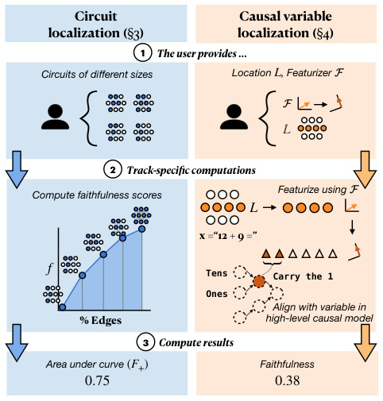
Circuit Causal variable
localization ( §3 ) localization ( §4 )
1 The user provides …
Circuits of different sizes Location , Featurizer L F
F
L
{ {
2 Track-specific computations
Featurize using F
Compute faithfulness scores
L
x =“12 + 9 =”
f Tens Carry the 1
Ones
Align with variable in
% Edges high-level causal model
3 Compute results
Area under curve ( F +) Faithfulness
0.75 0.38
}
Figure 1. An overview of MIB. We compare different circuit (§3) and causal variable (§4) localization methods on their ability to faithfully represent a model’s behavior on a given task. We provide standardized datasets and metrics for this purpose, and accept user submissions for display on two public leaderboards (§2).
of their behavior. To this end, mechanistic interpretability (MI) methods have proliferated quickly. MI methods can yield deep insights into LM behaviors (Rauker et al.¨ , 2023; Ferrando et al., 2024; Sharkey et al., 2025, i.a. ), and sometimes yield more fine-grained control over LM behaviors than standard training or inference techniques (Meng et al., 2022; Marks et al., 2025). However, it is difficult to directly compare the efficacy of MI methods. New methods are often compared to prior methods via ad hoc evaluations using metrics that may not produce generalizable insights. Thus, how can we know whether new methods are producing real advancements over prior work?
We propose a benchmark to provide a basis for comparisons.
A benchmark is a claim as to what should be considered important to a field. In our case, the ability to precisely locate, and causally validate, task mechanisms or specific concepts in a neural network is the key goal of (at least some part of) many MI pipelines. In fact, some have argued that causal analysis and localization are what differentiate MI from other types of interpretability work (Mueller et al., 2024; Geiger et al., 2024a; Saphra & Wiegreffe, 2024). Existing benchmarks compare within a specific class of methods (Karvonen et al., 2025; Schwettmann et al., 2023), or on specific tasks and models (Arora et al., 2024; Huang et al., 2024a; Miller et al., 2024; Gupta et al., 2024).
We propose MIB to encourage stable standards for comparing across MI methods—specifically, localization and featurization methods—in a principled way. MIB encourages evaluation across a standard suite of models, datasets with fixed counterfactual inputs used for interventions (§2), and principled metric definitions—including novel metrics (§3.1). It includes two public leaderboards that accept submissions for evaluation on a private test set (§2.4).
MIB contains two tracks based on two prominent paradigms in mechanistic interpretability: circuit localization (§3) and causal variable localization (§4). The circuit localization track benchmarks how well methods can locate the most important subset of model components for performing a given task (Cao et al., 2020; Wang et al., 2023; Conmy et al., 2023). The causal variable localization track benchmarks methods for featurizing hidden vectors (e.g., mapping them to an alternative vector space) and selecting features that implement specific causal variables or concepts (Vig et al., 2020; Geiger et al., 2021; 2024a; Mueller et al., 2024).
Beyond standardizing evaluations, MIB yields several scientific insights. For instance, using MIB, we find that attribution and mask optimization methods outperform other approaches to circuit localization. We find that supervised methods provide better features for causal variable localization, but the popular method of sparse autoencoders (SAEs) fail to provide better features that standard dimensions of hidden vectors. This is evidence that (1) there is clear differentiation between methods, and (2) there has been real progress in mechanistic interpretability.
Our dataset is available at this HuggingFace URL. Code is available at this GitHub URL. The leaderboard is hosted at this HuggingFace URL.
2. Materials
2.1. Tasks
Both tracks evaluate across four tasks. The tasks are selected to represent various reasoning types, difficulty levels, and answer formats. Two of the tasks—Indirect Object Iden-
tification and Arithmetic—were chosen because they have been extensively studied, while the others—Multiple-choice Question Answering and the AI2 Reasoning Challenge— were chosen precisely because they have not been studied.1
The number of instances in each dataset and split is summarized in Table 5 (App. C). Each task comes with a training split on which users can discover circuits or causal variables, and a validation split on which users can tune their methods or hyperparameters. We also create two test sets per task: public and private. The public test set enables faster iteration on methods. We release the train, validation, and public test sets on Huggingface. The private test set is not visible to users; they must upload either their circuits or their locations and featurizers to an API (see §2.4).
Indirect Object Identification (IOI). The indirect object identification (IOI) task, first proposed by Wang et al. (2023), is one of the most studied tasks in MI. IOI has sentences like “When Mary and John went to the store, John gave an apple to ” , containing a subject ( “John” ) and an indirect object ( “Mary” ), which should be completed with the indirect object. Even small LMs can achieve high accuracy; thus, it has been well studied (Huben et al., 2024; Conmy et al., 2023; Merullo et al., 2024). We generate 40,000 instances. We ensure that each name tokenizes to a single token for all models we test. To assess generalization, the private test set contains names and direct objects that are not contained in the public train or test set. See App. C.1 for details.
Arithmetic. Math-related tasks are common in MI (Stolfo et al., 2023; Nanda et al., 2023; Zhang et al., 2024; Nikankin et al., 2025) and interpretability research more broadly (Liu et al., 2023; Huang et al., 2024b). We follow Stolfo et al. in defining the task as performing operations with two operands of up to two digits each. Given a pair of numbers and an operator, the model must predict the result of the operation, e.g., “What is the sum of 13 and 25?” . To create the dataset, we enumerate all possible pairs of one-digit and two-digit numbers and generate queries for addition and subtraction, yielding about 75,000 instances. Following Karpas et al. (2022) and Stolfo et al. (2023), we use six natural language templates for each operand pair to ensure we are isolating robust behavior. See App. C.2 for details.
Multiple-choice question answering (MCQA). MCQA is a common task format on LM evaluation benchmarks, though only a few MI works have studied it (Lieberum et al., 2023a; Wiegreffe et al., 2025; Li & Gao, 2024). We expand an existing synthetic dataset designed to isolate a model’s MCQA ability from any task-specific knowledge (Wiegreffe
1Studying the same tasks can lead to hill-climbing on narrow distributions. Insights from novel models and task settings could verify that previous advancements are real.
et al., 2025); the information needed to answer the questions is contained in the prompt. We generate 260 instances. All questions have four choices and are about the color of an object, such as:
Question: A box is brown. What color is a box? A. gray B. black C. white D. brown Answer: D
AI2 Reasoning Challenge (ARC). Finally, we analyze the ARC dataset (Clark et al., 2018), which comprises gradeschool-level multiple-choice science questions. This is a representative task for evaluating basic scientific knowledge in LMs (Brown et al., 2020; Jiang et al., 2023; Dubey et al., 2024). Our work presents the first causal investigation of LM performance on this dataset, and among the first MI investigations of a more realistic task used to benchmark stateof-the-art LMs. We follow the dataset’s original partition to Easy and Challenge subsets (5000 and 2500 instances, respectively) and analyze them separately; this is due to a large accuracy difference on the two subsets (Table 1). We maintain the original 4-choice multiple-choice prompt formatting (see App. C.4), making this dataset related in format to, but more challenging than, MCQA.
2.2. Counterfactual Inputs
For both MIB tracks, counterfactual interventions on model components2 provide the basis for all evaluations. Here, components are set to the value they would have taken if a counterfactual input were provided. Activation patching is a popular term for this method.3 Several studies (Vig et al., 2020; Geiger et al., 2021; Chan et al., 2022) have argued that this type of intervention is a useful analysis tool because components are only ever fixed to values that they would actually realize (as opposed to interventions that add noise or fix components to constants).
In the circuit localization track, activation patching is used to push models towards answering in an opposite manner to how they would naturally answer given the input. Success is achieved in this setting when counterfactual interven-
2We use “component” as a generic term to refer to any (part of a) hidden representation in a model. When referring to submodules like full MLP blocks, we refer to the output vectors of these blocks.
3The term activation patching includes not only interventions from counterfactual inputs, but also interventions that zero out activations, inject noise, or steer activations to off-distribution values (Wang et al., 2023; Zhang & Nanda, 2024); we use this term because we use mean ablations and optimal ablations as baselines in §3.2. Terms like resampling ablations (Chan et al., 2022) or interchange interventions (Geiger et al., 2021) more narrowly refer to interventions from counterfactual inputs.
Table 1. Model performance (0-shot, greedy generation) for all models and tasks on our public test splits. For results using rankedchoice scoring and more details on evaluation, see App. C.5.
| Arith | metic | A | RC | |||
|---|---|---|---|---|---|---|
| IOI | MCQA | (+) | (−) | (E) | (C) | |
| Llama-3.1 8B | 0.71 | 0.92 | 0.96 | 0.88 | 0.93 | 0.79 |
| Gemma-2 2B | 0.83 | 1.00 | 0.65 | 0.43 | 0.79 | 0.59 |
| Qwen-2.5 0.5B | 0.99 | 1.00 | 0.37 | 0.29 | 0.73 | 0.58 |
| GPT2-Small | 0.92 | 0.06 | 0.00 | 0.10 | 0.03 | 0.03 |
tions to components outside the circuit minimally change the model’s predictions. In the causal variable localization track, activation patching is used to precisely manipulate specific concepts. Success is achieved in this setting when a variable in a causal model is a faithful summary of the role a model component plays in input-output behavior— i.e., interventions on the variable have the same effect as interventions on the model component.
The counterfactual input defines the task to a large extent (Miller et al., 2024);4 thus, it is crucial that the mapping from a dataset instance to its counterfactual counterpart is fixed. For each task, we define a set of meaningful counterfactual inputs to help localize model behaviors. Some of these maintain the same correct answers as the original instances; some do not. For example, the counterfactual inputs for ARC and MCQA have different answer symbols or answer orders than the original instance, which change the correct answer. Others change the semantics of the input, which may or may not change the correct answer.
We provide counterfactual inputs for each instance in the train, validation, and test sets, where the mappings from the original inputs to the counterfactual inputs are fixed to ensure consistency in evaluation. These are provided on Huggingface. See App. C, Tables 6, 8, 9, and 10 for examples and App. C for more details.
2.3. Models
To provide baselines for our paper and to initialize entries in the public leaderboard, we evaluate a set of open-weight models. Given the pace of the field, any set of models or tasks will be incomplete; we select 4 models that cover a range of model sizes, families, capability levels, and prominence in MI: Llama-3.1 8B (Dubey et al., 2024), Gemma-2 2B (Riviere et al., 2024), Qwen-2.5 0.5B (Yang et al., 2024), and GPT-2 Small (117M, Radford et al., 2019).
For a mechanistic analysis to be meaningful for a given
4For example, given IOI, if the counterfactual entails replacing a name with a randomly selected one, then the task is now to choose the correct indirect object over a random name; this is distinct from simply generating the correct indirect object.
model and task, the model generally should be able to perform the task well (and perform well on counterfactuals). Performance for all models and tasks using 0-shot prompts5 and greedy decoding is in Table 1; performance on counterfactual inputs are in App. C.5. Gemma 2 and Llama are generally capable across the board, performing well on MCQA and ARC (Easy). GPT-2 Small has been extensively studied in MI; it is significantly smaller than the other models we investigate and less capable (and thus may rely on qualitatively different mechanisms than larger models that have been exposed to more data). Qwen-2.5 performs well relative to its size but has not yet been extensively studied.
2.4. Leaderboard
We have constructed two online leaderboards (one for each track) hosted on Huggingface to receive user submissions and display results. We intend for the leaderboards to serve as a living public artifact that both incentivizes progress in MI and advises users of MI tools on the state of the art. More details about the leaderboards, including screenshots, are in App. C.6.
We have constructed a submission portal for users. This will aggregate required information and links to one’s materials, where they will then be used to run evaluations on the private test set. Our hope is that users will be able to use the public test set for fast prototyping of new methods, and that the private test set will be the measure by which the state of the art is benchmarked.
3. Circuit Localization Track
The circuit localization track centers on evaluating how well a method can discover causal subgraphs C —more commonly known as circuits (Olah et al., 2020)—that localize the mechanisms underlying how a full neural network N performs a given task. Here, we define metrics for comparing circuit localization methods (§3.1) and compare common methods (§3.2).
Defining circuits. A circuit C is a set of nodes and edges in the computation graph of N . Nodes are typically submodules or attention heads (e.g., the layer 5 MLP, or attention head 10 at layer 12); edges are abstract objects that reflect information flow between a pair of nodes.
3.1. Circuit Metrics
The metrics used to evaluate circuits are largely not standardized. There have been efforts to bring rigor to circuit evaluations (Miller et al., 2024)—and to ascertain whether
5In-context learning is itself a behavior worth studying mechanistically, but one that is challenging to disentangle from taskspecific behavior, leading many MI studies to use 0-shot prompts.
circuits are sensible data structures at all (Shi et al., 2024). As far as we are aware, no large-scale benchmark exists to systematically compare circuit localization methods. Thus, in addition to the proposed range of models and tasks (§2), we propose two circuit localization metrics that enable comparison across circuit discovery methods , rather than across individual circuits.
A common metric for evaluating circuits is faithfulness (Wang et al., 2023; Miller et al., 2024). It aims to measure the extent to which a subgraph C of the computation graph explains the full model N ’s behavior on some task. Faithfulness is often defined ad hoc. In fact, this metric is often used for two distinct goals: (i) to measure whether C contributes to higher performance on a task (e.g., Meng et al., 2022; Stolfo et al., 2023; Nikankin et al., 2025), or (ii) to capture any component with measurable impact on a task, whether positive or negative (e.g., Wang et al., 2023; Hanna et al., 2024; Marks et al., 2025). Which is the correct way to measure the quality of a circuit? Many studies work with either one of the notions, or a mix of the two—e.g., discovering components as in (ii) but defining the metric more in line with (i), or vice versa. This overloads the term.
We claim that both are valid but complementary goals, and therefore split faithfulness into two metrics: (i) the integrated circuit performance ratio (CPR), and (ii) the integrated circuit-model distance (CMD). CPR prioritizes methods that locate components with a positive effect on model performance on the task; higher is better. CMD prioritizes methods that locate components with any strong effect on model performance, including negative effects; 0 is best. Intuitively, CPR may be more useful when aiming to understand components that encourage or positively affect a given model behavior. CMD may be more useful when the aim is to explain the full algorithm the model implements to perform some behavior (including cases where the behavior is not desirable). We operationalize these metrics below.
Discovering a circuit C often involves scoring components in a computation graph according to their importance, and only including those that exceed a causal importance threshold λ (a hyperparameter; Conmy et al., 2023; Marks et al., 2025). Given C and the full neural network N , we can define faithfulness f as
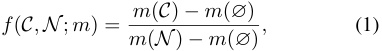
where m is the logit difference y′ − y between the correct answer y given the original input x and correct answer y′ given the counterfactual input x′ .6 ∅ is the model with all components ablated (the empty circuit). Conceptually, this
6No choice of m is perfect. Like the counterfactual input, the metric defines the task. We follow Zhang & Nanda (2024), who recommend the logit difference based on empirical evidence.
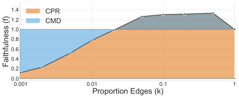
1.4 CPR
1.2 CMD
1.0
0.8
0.6
0.4
0.2
0.0
0.001 0.01 0.1 1
Proportion Edges (k)
Faithfulness (f)
Figure 2. Definition of our faithfulness metrics. CPR, in orange, is the area under the faithfulness curve (the black line); it captures how well the method finds performant circuits at many circuit sizes. CMD, in blue, is the area between the faithfulness curve and the line at f = 1; it captures how closely the circuit’s behavior resembles the model’s task-specific behavior at many circuit sizes. Because we define f as a ratio, f = 1 (the horizontal line) means that the circuit and full model achieve the same logit difference.
corresponds to the proportion of divergence in m between the prior and the full model that the circuit recovers (Marks et al., 2025). There exist other formulations of f , like the difference (rather than ratio ) of m between C and N (Wang et al., 2023). We opt for the formulation of Marks et al. (2025), as this gives meaning to the values 0 ( C recovers none of the performance of N relative to ∅) and 1 ( C assigns identical probability differences to y and y′ relative to N ).
We do not want the threshold λ to affect comparisons between circuit localization methods. Thus, we propose shifting focus away from the quality of individual circuits, and toward a method’s Pareto optimality with respect to two criteria: localizing task behavior, and minimizing circuit size. This formulation has the benefit of capturing minimality and faithfulness simultaneously.7 Specifically, we propose to to quantify CPR as the area under the faithfulness curve with respect to circuit size, and to quantify CMD as the area between the faithfulness curve and 1. Both metrics involve evaluating faithfulness at many circuit sizes, and can be conceptualized as marginalizing over the circuit size hyperparameter.
In their exact form, CPR = � k 1=0f(Ck)dk_and CMD = � k 1=0|1−f_(Ck)| dk,where_f_isthefaithfulness of circuit Ck and k is the proportion of edges from N in Ck . Computing these integrals would require infinite samples. Instead, we measure faithfulness at a few representative circuit sizes, and use these to approximate CPR and CMD with a Riemann sum:
- For all proportions of components k ∈{ .001, .002, .005, .01, .02, .05, .1, .2, .5, 1 } , discover a circuit Ck
7Prior implementations of minimality require manual analysis of the circuit (Wang et al., 2023); our formulation is more general, though it is useful primarily as a relative comparison point, rather than an absolute measure.
such that|Ck| |N |≤k.
-
Compute the faithfulness f for all Ck .
-
Compute the area under f (CPR) and the area between f and 1 (CMD) using the trapezoidal rule.
We illustrate CPR and CMD in Figure 2.
In a realistic neural network, it is difficult to anticipate the best-case and worst-case CPR or CMD values, meaning we cannot bound the metric without losing information. If we knew the ground-truth circuit, we could instead compute precision and recall. Thus, inspired by InterpBench (Gupta et al., 2024), we train a model that implements a known ground-truth circuit for IOI. Because we know which edges are in the circuit, we report AUROC ( ∈ [0 , 1]) over edges. See App. E for InterpBench model training and implementation details.
Measuring circuit size. Circuits can be defined at many levels of granularity: one can include entire layers, submodules in a layer, neurons in a submodule, etc. One can also define a circuit at the level of nodes (e.g., submodules) or edges (e.g., connections between submodules). Thus, a key challenge is defining a notion of circuit size that enables comparison across different types of circuits. For this purpose, we treat including a node as equivalent to including all of its outgoing edges. Including one neuron8 of d model in submodule u can be conceptualized as including all outgoing edges from u to d model1of the degree they would have been compared to including all neurons in u . Under these assumptions, we define the weighted edge count :
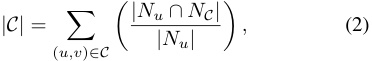
where u and v are nodes (submodules), Nu is the set of neurons in u (the size of which is typically d model), and NC is the set of neurons in the circuit. Intuitively, this is the number of edges from a submodule weighted by the proportion of neurons from that submodule in the circuit; we sum this quantity over all submodules. We then normalize this count by the number of possible edges to obtain a percentage.
3.2. Circuit Localization Baselines
Here, we evaluate common circuit localization methods. We evaluate each model9 and method10 in §2 where possible. We compare across multiple axes of variation, including (a) circuit localization method (see below), (b) granularity,
8We use “neuron” to refer to a single dimension of any hidden vector, regardless of whether it is preceded by a non-linearity.
9We do not evaluate Gemma or Qwen on Arithmetic, as they tokenize numbers such that each digit has its own token.
10Exact activation patching and optimal ablations become intractable with respect to runtime as models scale. UGS becomes intractable with respect to memory requirements as models scale.
Table 2. CMD scores across circuit localization methods and ablation types (lower is better), and AUROC scores for InterpBench (higher is better). All evaluations were performed using counterfactual ablations. Arithmetic scores are averaged across addition and subtraction; see Table 17 (App. D.3) for separate scores. We bold and underline the best and second-best methods per column, respectively.
| IOI | Arithmetic | MCQA | ARC ( | E) | ARC (C) | |||||||
|---|---|---|---|---|---|---|---|---|---|---|---|---|
| Method | InterpBench (↑) | GPT-2 Q | wen-2.5 G | emma-2 L | lama-3.1 | Llama-3.1 | Qwen-2.5 G | emma-2 Ll | ama-3.1 | Gemma-2 L | lama-3.1 | Llama-3.1 |
| Random | 0.44 | 0.75 | 0.72 | 0.69 | 0.74 | 0.75 | 0.73 | 0.68 | 0.74 | 0.68 | 0.74 | 0.74 |
| EActP (CF) | 0.28 | 0.02 | 0.49 | - | - | - | 0.36 | - | - | - | - | - |
| EAP (mean) | 0.78 | 0.29 | 0.18 | 0.25 | 0.04 | 0.07 | 0.21 | 0.20 | 0.16 | 0.22 | 0.28 | 0.20 |
| EAP (CF) | 0.73 | 0.03 | 0.15 | 0.06 | 0.01 | 0.01 | 0.07 | 0.08 | 0.09 | 0.04 | 0.11 | 0.18 |
| EAP (OA) | 0.77 | 0.30 | 0.16 | - | - | - | 0.11 | - | - | - | - | - |
| EAP-IG-inp. (CF) | 0.71 | 0.03 | 0.02 | 0.04 | 0.01 | 0.00 | 0.08 | 0.06 | 0.14 | 0.04 | 0.11 | 0.22 |
| EAP-IG-act. (CF) | 0.81 | 0.03 | 0.01 | 0.03 | 0.01 | 0.00 | 0.05 | 0.07 | 0.13 | 0.04 | 0.30 | 0.37 |
| NAP (CF) | 0.30 | 0.38 | 0.33 | 0.37 | 0.29 | 0.28 | 0.30 | 0.35 | 0.32 | 0.33 | 0.69 | 0.69 |
| NAP-IG (CF) | 0.62 | 0.27 | 0.20 | 0.26 | 0.19 | 0.18 | 0.18 | 0.29 | 0.33 | 0.28 | 0.67 | 0.67 |
| IFR | 0.71 | 0.42 | 0.69 | 0.75 | 0.83 | 0.22 | 0.60 | 0.62 | 0.48 | 0.66 | 0.64 | 0.76 |
| UGS | 0.74 | 0.03 | 0.03 | - | - | - | 0.20 | - | - | - | - | - |
including edge-level and neuron-level circuits, and (c) ablation type, including counterfactual (CF) ablations, mean ablations, and “optimal ablations” (OA; Li & Janson, 2024). For all methods, we assign importance scores to all edges or nodes, and either include the top-scoring components or perform greedy search; see App. D.1 for details.
As a sanity check, we compare to random control circuits (RANDOM). We operationalize this by uniformly sampling an importance score in [ − 1 , 1] for all edges in the model. We take the mean CPR and CMD across 3 random seeds.
One way to find circuits is to filter model components by their indirect effects (IE; Pearl, 2001). The IE is defined as the change in m caused by replacing a component’s activation with its activation on another input, typically one where the expected output differs. We follow the procedure of Vig et al. (2020) and (Finlayson et al., 2021). However, computing IE in exact form (ACTIVATION PATCHING, or ActP) is expensive, requiring O ( n ) forward passes, where n is the number of possible edges in N .
Attribution methods aim to reduce the cost of computing IE by approximating it. Nanda (2023) and Syed et al. (2024) propose ATTRIBUTION PATCHING (AP), which linearly approximates the IE for all nodes or edges in O (1) forward passes. When performed at the node level, we call this NODE AP (NAP); at the edge level, it is EDGE AP (EAP).
Unfortunately, AP approximates IE poorly (Syed et al., 2024). AP WITH INTEGRATED GRADIENTS (Sundararajan et al., 2017) or AP-IG, improves on AP by performing multiple steps of AP, trading off speed for approximation quality. We test two AP-IG variants: (i) AP-IG-inputs (Hanna et al., 2024) and (ii) AP-IG-activations (Marks et al., 2025). AP-IG-inputs requires O ( Z ) forward passes, while AP-IGactivations requires O ( Z · L ), where Z is the number of AP steps, and L is the number of model layers. We use Z = 5, following Hanna et al. (2024). We explore AP-IG
at the node level (NAP-IG) and edge level (EAP-IG). See App. D.2 for definitions and details.
Information flow routes (IFR; Ferrando & Voita, 2024) is a non-counterfactual-based and non-causal method that includes edge ( u, v ) in C if the output vector of u and input vector of v are highly similar; this is taken as evidence of a writing operation. See App. D.2 for details on how we adapted IFR to our formalization of circuits.
Mask-based methods aim to learn a pruning mask on the edges of the computational graph. During training, masks are continuous. Edges with low mask values are ablated more often or more fully; edges with high values are likely in the circuit. The mask’s training objective aims to maintain model behavior (often measured by KL-divergence with the unablated model) while keeping the mask sparse (measured by its L 1 norm). After training, the mask can be converted into a binary mask indicating which edges are in the circuit.
As a mask-based method, we employ UNIFORM GRADIENT SAMPLING (UGS; Li & Janson, 2024), which uses CF ablations. Li & Janson also propose optimal ablations (OA), in which the mask is learned jointly with the value used to ablate non-circuit edges; they prefer OA as it is both independent of the example being ablated (unlike CF ablations) and minimally harmful (unlike mean ablations). Due to computational constraints, we do not do this, but instead learn OA vectors by optimizing them to minimize the expected cross-entropy loss on the task dataset. We then use these vectors as ablation values when running circuit localization with EAP. See App. D.2 for details.
3.3. Results
We present CMD and AUROC scores (Table 2) for each method and task where it is tractable to run; see Table 14 in App. D for CPR scores. On both metrics, EAP-IGinputs with CF ablations generally performs best. EAP-IG-
activations and UGS are competitive with EAP-IG-inputs w.r.t. CMD, but have higher runtime and memory usage respectively. For CPR, they are less competitive; this is unsurprising for UGS, as it directly optimizes for maintaining model behavior, rather than for finding solely positively impactful components.
More surprisingly, edge activation patching (EActP) does not always perform best, despite computing exact IEs for each edge: it dominates for IOI on GPT-2, but not Qwen-2.5 or InterpBench. This could stem from our use of fewer examples to run EActP due to its long runtime. But EActP also has deeper limitations: like attribution methods, it estimates the effect of ablating each edge independently; this may imperfectly predict the effect of ablating multiple edges in tandem (Mueller, 2024). That said, UGS, which considers many edges at once, is also not the top performer.
Circuits found with CF ablations outperform those found with mean or optimal ablations; the latter two score similarly to each other. This is expected, as the setting in which CF circuits are found more closely resembles the evaluation setting, and more precisely localizes the distinction captured by the CF input pairs.
Certain methods underperform with respect to both metrics: node-level circuits do poorly, likely because each node included “costs” many edges; such circuits simply cannot be as sparse as edge circuits. The non-causal method IFR tends to achieve lower performance than attribution methods, but significantly better than random circuits in most cases.
In summary, EAP-IG-inputs achieves the highest performance on average on both CMD and CPR. However, other techniques , like EAP-IG-activations, EAP, and UGS, remain competitive .
4. Causal Variable Localization Track
The circuit localization track evaluates methods that localize behaviors to model components that form end-to-end pathways from input to output. In contrast, the causal variable localization track evaluates methods that localize a specific concept along causally active paths. Figure 3 visually depicts an example evaluation in this track, while Table 3 contains results for causal variable localization methods.
4.1. Causal Abstraction
A basic assumption in mechanistic interpretability is that models implement intelligent behaviors by representing and manipulating concepts.11 We operationalize such hypotheses by encoding the reasoning process as a causal model H with variables corresponding to concepts. The task is to
11Crucially, the concepts employed by an LM may not relate to those employed by a human on the same task (Hewitt et al., 2025).
align these high-level conceptual variables in a causal model with low-level features in a neural model that have the same mechanistic role, i.e., the high-level causal model is a causal abstraction of the LM (Geiger et al., 2021; 2024a).
LM Features. What should be the atomic units of analysis, or features , for mechanistic interpretability? The answer is hotly debated and not currently clear (Mueller et al., 2024), so we design this track to incentivize investigation of this fundamental question. We adopt the framework of Geiger et al. (2024a) in which any hidden vector h ∈ Rd constructed by a model N during inference can be mapped into a new feature space Fk (e.g., a rotated vector space) using an invertible function F : Rd → Fk (e.g., multiplication with an orthogonal matrix). Features Π are a set of indices between 1 and k , i.e., a set of dimensions in Fk . This framework supports a variety of features, including neurons, orthogonal directions, SAE features, and non-linear features. The vector h might come from the residual stream between transformer layers or the output of an attention head.
Alignments. Alignments between high-level conceptual variables and low-level features will not be static, even in the simplest cases. For instance, in MCQA, the index of the token corresponding to the correct multiple choice answer will change depending on the number of tokens in the question. As such, submissions to MIB can provide an alignment that aligns a variable X with features Π X of a dynamically selected hidden vector h , e.g., the residual stream of the correct answer token in the MCQA task.
Faithfulness metrics. We quantify the degree to which a variable X ∈H faithfully abstracts the features Π X using interchange interventions . Given base and counterfactual inputs ( b, c ), the interchange intervention HX← Get( H ( c ) ,X )( b ) runs H on base input b while fixing the variable X to the value it takes when H is run on a counterfactual input c (Vig et al., 2020; Geiger et al., 2020). The distributed interchange intervention N Π X ← Get( N ( c ) , Π X )( b ) runs N on b while fixing the features Π X of the hidden vector h passed through F to the value they take for counterfactual input c (Wu et al., 2023; Amini et al., 2023; Geiger et al., 2024b).
Given a counterfactual dataset D and a high-level causal model H aligned to an LM N , we measure whether interchange interventions on a variable X in H and aligned features Π X in N produce the same output:
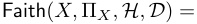
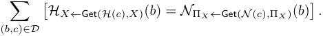
This metric of interchange intervention accuracy (IIA) is for all tasks except IOI, which has a logit-based metric (§4.6).
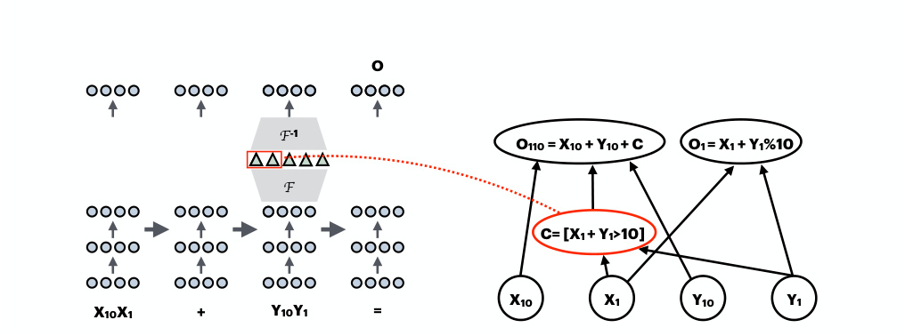
O
F -1
O110 = X10 + Y10 + C O1 = X1 + Y1%10
F
C= [X1 + Y1>10]
X10 X1 Y10 Y1
X10X1 + Y10Y1 =
(a) Arithmetic Task Submission. Users submit an alignment between the carry-the-one variable X Carry in a high-level causal model H + and two features Π X Carry of the neural network’s residual stream at the second number token.
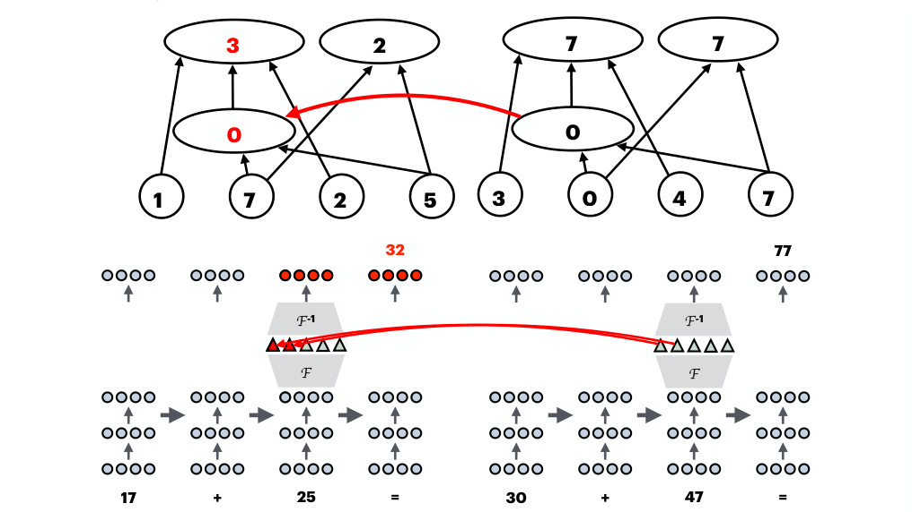
3 2 7 7
0 0
1 7 2 5 3 0 4 7
32 77
F -1 F -1
F F
17 + 25 = 30 + 47 =
(b) Arithmetic Task Evaluation. An aligned interchange intervention with base input “17+25=” and counterfactual input “30+47=”. At the high-level, the interchange intervention HX Carry ← Get( H (30+47) ,X Carry)(17 + 25) fixes the carry-the-one variable X Carry to the value 0 (from the counterfactual) instead of its natural value 1 (from the base input), causing the causal model to output “32” instead of “42”. At the low-level, the interchange intervention N Π X Carry ← Get( N (30+47) , Π X Carry )(17 + 25) fixes the aligned features Π X Carry of the LM to the value they take on when the LM is run on the counterfactual input. The low-level output after intervention “32” is equal to the high-level output after intervention, which is a piece of evidence supporting the hypothesized alignment between the carry-the-one variable and the identified neural network features. The faithfulness metrics aggregate these individual experiments across base-counterfactual input pairs.
Figure 3. A schematic of the causal variable localization track submission and evaluation. Users submit an alignment between a high-level causal variable X and hidden vector features Π X in an LM (top). In evaluations, aligned interchange interventions are performed with base and counterfactual inputs ( b, c ) on the high-level causal model HX← Get( H ( c ) ,X )( b ) and the low-level neural network N Π X ← Get( N ( c ) , Π X )( b ). The more similar LM output under intervention is to the causal model output under intervention, the more faithfully the causal model abstracts the LM (bottom).
For each task, we have base and counterfactual input pairs (defined in §2.1). We use interchange interventions on counterfactual pairs to isolate variables in H that result in different outputs, conditional on which variables are targeted in the intervention. This is not as obvious as it first appears; na¨ıve approaches to sampling counterfactual inputs used for intervention can undersample or exclude crucial settings.
For all tasks, we filter out all examples where the model predicts the incorrect output for the base input or any of the counterfactuals used. Possible extensions may expand to explain when LMs fail, which would be analogous to the CMD metric from the circuit localization track.
features of the residual stream vector that correspond to variables in the high-level causal model. For each causal variable, we use training data to create and select features, and then evaluate the faithfulness of aligning those features with the causal variable. We compute the token location with the highest score at each layer and report the best layer and the average across layers. Future submissions are free to target any tokens. For IOI, we focus our baseline experiments to the attention heads identified by Wang et al. (2023) in GPT2-small, but we will allow for future submissions to identify new attention heads in the other three models.
4.3. MCQA and ARC (Easy)
4.2. Causal Variable Localization Baselines
Featurizers and feature selection. We consider five baselines for constructing the featurizer F and selecting the features Π X . See App. F for further details.
We evaluate three unsupervised featurization methods that provide features without access to a high-level causal model. The most na¨ıve of these is the “Full Vector” baseline; this entails using an identity featurizer, and then selecting all features—i.e., intervening on the full untransformed hidden vector h . We also evaluate PRINCIPAL COMPONENT ANALYSIS (PCA; Tigges et al. 2023; Marks & Tegmark 2024) and SPARSE AUTOENCODERS (SAE; Bricken et al. 2023; Huben et al. 2024), which encode into very highdimensional spaces with many features. For SAEs, we use the publicly available GemmaScope (Lieberum et al., 2024) and LlamaScope (He et al., 2024).
To select SAE features, principal components, or standard dimensions of hidden vectors that are aligned with high-level causal variables, we use DESIDERATA-BASED MASKING (DBM; Cao et al. 2020; 2022; Csordas et al. 2021´ ; Davies et al. 2023; Chaudhary & Geiger 2024) to learn a binary mask over features using a high-level causal model as a source of supervision. The masks are trained to maximize the faithfulness metric on training data.
We also evaluate a supervised featurization method DISTRIBUTED ALIGNMENT SEARCH (DAS; Geiger et al. 2024b) that learns a featurizer with supervision from the high-level causal model. First, a variable in the high-level causal model is aligned with features that are randomly initialized orthogonal directions that define a linear subspace of a hidden vector. Then, the features are trained to maximize the faithfulness metric. There is no need for a separate feature selection procedure because the features are constructed specifically for the high-level variable.
Dynamic alignment. For tasks other than IOI, we bruteforce search over a few manually selected token locations. For each layer and token location, we attempt to locate
Causal model. For the two multiple-choice question answering datasets, we hypothesize the LM computes the position of the answer token in context before retrieving the answer token itself. The high-level causal model H MCQA is a simple algorithm with three variables: a text input variable T , an ordering ID X Order (Dai et al., 2024) storing the position of the answer, and the answer token O Answer. This model abstracts away the details of how the answer position is computed; the mechanism for X Order is a lookup table from inputs to the index of the answer token, i.e., a number between 1 and 4 because there are four choices. Instead, the focus is on the retrieval of the correct choice; the mechanism for O Answer dereferences the index stored in X Order.
Counterfactuals. We use counterfactuals where the answer position is changed, where the choice letters are randomized, or both. When both the answer position and the choice letters are different in the counterfactual, a different output is expected when localizing the ordering id X Order versus the answer token O Answer. If the ordering ID is targeted, then the expected output is the choice token in the base at the answer position from the counterfactual. If the answer token is targeted, then the expected output is the answer token from the counterfactual, regardless of position.
Results. We target the residual stream of the last token of the input and the correct choice letter token at each layer. We generally see strong evidence (Tables 3a and 3c; App. F.5.1) of the causal model H MCQA being a faithful abstraction, with DAS successfully disentangling the ordering ID variable X Order from the output token O Answer in many layers. Even the full vector baseline successfully localizes the variable in some layers, though it performs poorly on average because both variables are aligned with the same features.
4.4. Two-Digit Addition
Causal model. For the two-digit addition task, we hypothesize that LMs use a “carry-the-one” algorithm, as illustrated in Figure 3. The causal model H + has an text input variable T that is parsed into the variables X 1, X 10,
Table 3. Baseline results for the causal variable localization track. In each table, the first row is the task, the second row is the model, and the third row is the causal variable. For Arithmetic, MCQA, and ARC (Easy), we report interchange intervention accuracy, i.e., the proportion of aligned interventions on the causal model and deep learning model that result in the same output token(s); higher is better. For each method of aligning a causal variable to LM features, we report the mean across counterfactual datasets and layers in the low-level model. In parenthesis and bold, we report the best alignment across all layers. For IOI, we report the mean-squared error between the causal model logit and the deep learning model logit; lower is better. See App. F.5 for more detailed results by task.
| ARC | (Easy) | Arithm | etic (+) | ||||
|---|---|---|---|---|---|---|---|
| Gem | ma-2 | Llama | -3.1 | Gemma-2 | Llama-3.1 | ||
| Method | _O_Answer | _X_Order | _O_Answer | _X_Order | Method | _X_Carry | _X_Carry |
| DAS | 88 (94) | 76 (88) | 88 (99) | 74 (84) | DAS | 31 (35) | 54 (65) |
| DBM | 82 (99) | 63 (80) | 85 (100) | 69 (82) | DBM | 33 (43) | 47 (58) |
| +PCA | 78 (98) | 64 (81) | 84 (100) | 72 (83) | +PCA | 32 (44) | 37 (56) |
| +SAE | 70 (89) | 54 (70) | 74 (94) | 55 (67) | +SAE | 32 (44) | 38 (55) |
| Full Vector | 63 (100) | 43 (74) | 68 (100) | 47 (72) | Full Vector | 29 (35) | 35 (45) |
(a) The ARC (Easy) task with a high-level model that computes the ordering of the answer X Order and then the answer token O Answer.
(b) The two-digit arithmetic task with a variable that computes the carry-the-one variable X Carry.
| MC | QA | I | OI | ||||||
|---|---|---|---|---|---|---|---|---|---|
| Gem | ma-2 | Llama | -3.1 | Qwe | n-2.5 | GP | T-2 | ||
| Method | _O_Answer | _X_Order | _O_Answer | _X_Order | _O_Answer | _X_Order | Method | _S_Pos | _S_Tok |
| DAS | 95 (97) | 77 (93) | 94 (100) | 77 (91) | 86 (95) | 78 (100) | DAS | 2.20 | 2.08 |
| DBM | 84 (99) | 63 (84) | 86 (100) | 66 (73) | 46 (94) | 60 (99) | DBM | 2.22 | 2.35 |
| +PCA | 57 (96) | 52 (81) | 65 (99) | 53 (74) | 22 (76) | 54 (100) | +PCA | 2.24 | 2.33 |
| +SAE | 73 (90) | 51 (65) | 80 (99) | 58 (65) | – | – | Full Vector | 2.45 | 2.82 |
| Full Vector | 61 (100) | 44 (77) | 77 (100) | 46 (68) | 35 (99) | 49 (99) | (d) The IOI task with | ariables | for th |
(d) The IOI task with variables for the position S Pos and token S Tok of the subject. The metric is mean-squared error; lower is better.
(c) The MCQA task with variables for the ordering of the answer X Order and then the answer token O Answer. This is a low-data regime ( ≈ 100 examples).
| RA | VEL | |||||
|---|---|---|---|---|---|---|
| Gemma-2 | Llama-3.1 | |||||
| Method | ACont | ACountry | ALang | ACont | ACountry | ALang |
| DAS | 75 (85) | 57 (67) | 62 (70) | 75 (83) | 58 (64) | 63 (70) |
| DBM | 66 (71) | 53 (65) | 54 (58) | 68 (80) | 53 (59) | 58 (64) |
| +PCA | 63 (70) | 47 (53) | 50 (56) | 62 (74) | 48 (54) | 53 (57) |
| +SAE | 64 (72) | 49 (56) | 53 (59) | 64 (72) | 50 (57) | 55 (57) |
| Full Vector | 48 (62) | 49 (57) | 45 (56) | 53 (62) | 47 (53) | 47 (57) |
(e) The RAVEL task with variables for the country ACountry , continent ACont , and language ALang of a city.
Y 1, and Y 10 that represent the ones and tens digits of each two-digit input. The variable X Carry is a child of X 1 and Y 1 and takes on the value 1 if X 1 + Y 1 is greater than 10. The output variable O 110 has all inputs and X Carry as parents and takes on the value X Carry + X 10 + Y 10. The output variable O 1 has X 1 and Y 1 as parents and takes on the value ( X 1 + Y 1)%10. For the benchmark, we report results for localizing the variable X Carry.
Counterfactual dataset. We use equal parts random counterfactuals and counterfactuals that do not change the carry-the-one variable (e.g., base 17+75 and counterfactual 11+71 ). Interchange interventions on X Carry in H + with random counterfactuals will cause the output variable O 110 to
increase or decrease by 1 half the time and have no effect the other half. The carry-the-one counterfactual inputs always require a change in the output, but hold the input and parts of the output fixed so that low-level interchange interventions are less likely to have unintended consequences.
Results. For each baseline, we target the last token and the last token of the second operand. We see poor performance across the board (Table 3b; App. F.5.2). The Gemma-2 results are at chance and the Llama-3.1 results have only faint signs of success. The difference in results is likely due to only Llama-3.1 tokenizing multi-digit numbers as single tokens. There may be no “carry-the-one” variable present in these models. Alternatively, the variable might
be represented in a non-linear features space , e.g., an onion representation (Csordas et al.´ , 2024). Future submissions that beat baselines will require genuine progress.
4.5. RAVEL
The Resolving Attribute–Value Entanglements in Language Models (RAVEL) benchmark (Huang et al., 2024a) evaluates methods for featuring hidden vectors and selecting features that isolate certain attributes about an entity . For causal variable localization track, we include the split of RAVEL for disentangling the country, continent, and language attributes of city entities. The prompts are queries about a certain attribute, e.g., Paris is on the continent of .
Causal model. The causal model for RAVEL has a text input variable T , three attribute variables ACountry , ACont , and ALang for the attributes of the city in the prompt, a queried attribute variable AQuery , and an output variable O that retrieves the value of the attribute variable corresponding to the queried attribute.
Counterfactuals. Half of the counterfactual prompts are prompts that query a different attribute from the base prompt. The other half are random sentences from Wikipedia containing the city. Interventions on ACountry , ACont , and ALang will only change the output if the queried attribute matches the intervened variable. When evaluating each variable, we balance the base prompts such that half of the prompts query the intervened attribute, which enforces the balance between interventions that should change the output and interventions that shouldn’t change the output.
Results. For each baseline, we target the last token and the last token of the city entity in the prompt. We generally see evidence that the attributes can be localized and disentangled (Table 3e; App. F.5.3), though the Llama-3 results are weaker. Because the dataset requires balancing causing an attribute to change with not changing the other attributes, the full vector baseline entirely fails completely.
4.6. Indirect Object Identification.
In App. A of Wang et al. (2023), there is an experiment where the identified four “S-Inhibition” heads that decrease the likelihood of the subject token are intervened upon with counterfactual datasets that invert the position of the subject or invert the token identity of the subject. They found the heads contain token and position signals that make roughly linear contribution to the difference between the indirect object logit and the subject logit. However, they did not attempt to disentangle the hidden vector outputs of those attention heads to align each signal with LM features.
Causal model. First, we replicate these experiments on our curated datasets and fit our own linear model that we use to define a causal model H IOI that predicts the logit difference between the indirect object and the subject. The high-level causal model takes in a text input T and computes the token and positional information S Tok and S Pos encoding the subject token identity and position, respectively. Then, the output variable O : (i) checks if the token and position variables S Tok and S Pos match the input T and inverts the signal if a mismatch is detected, and (ii) computes the logit difference between the indirect object and subject as a linear function of these binary variables. See Appendix F.5.4 for details of the causal model.
Counterfactuals. We use counterfactuals where the subject and indirect object tokens are inverted, their position is inverted, or both. We align each variable with features of the four heads. These counterfactuals test the ability of methods to disentangle the token and position variables.
Results. Broadly, we find evidence that the position and token variable can be disentangled (Table 3d; App. F.5.4). For the full vector baseline, we conduct a brute force search and find an alignment of position to heads 7.3, 7.9 (Π S Pos), and 8.6 and token to head 8.10 (Π S Tok), to be better than other alignments to entire heads. While the variables can be disentangled at the level of heads, even better results are achieved when each variable is aligned to features of heads.
4.7. General Discussion
Table 3 shows the full results for the causal variable localization track. We now describe general trends across tasks.
Distributed alignment search (DAS) consistently achieves the best results. DAS is the only method that learns features with supervision from the high-level causal model, so it is not surprising this method performs best. This establishes a skyline to compare unsupervised featurization methods against.
DBM on standard hidden dimensions is a strong baseline. The success of DBM shows that the dimensions of untransformed hidden vectors can be useful units of analysis; however, DAS outperforming DBM shows that non-basisaligned directions in activation space are generally better units of analysis.
DBM on PCA or SAE features does not outperform DBM on standard dimensions. SAE and PCA features generally fail to improve upon neurons, i.e., standard dimensions of hidden vectors, as a unit of analysis. Across the board, DBM on SAE features is the worst performing method other than the full vector baselines. A notable exception is the MCQA task where PCA performs very poorly,
which we suspect is due to the low-data regime of ≈ 100 examples harming the quality of the principal components we compute. This is in line with the results from the steering benchmark AxBench (Wu et al., 2025), in which SAEs struggle against simple steering baselines.
correctly describing latent functions implemented by model components. Other benchmarks focusing on benchmarking explanations of LM behaviors (Mills et al., 2023; Atanasova et al., 2023).
6. Conclusions
There is room for future submissions to establish state-ofthe-art results on the benchmark. There are several clear opportunities for future submissions to the causal variable track to improve upon our baselines. First, our baselines provide weak evidence at best for the carry-the-one variable of the two digit addition task and we have hope that more complex feature spaces might be more successful. Second, while we only run baselines for IOI on the GPT-2 attention heads identified by (Wang et al., 2023), we encourage future submissions to locate and featurize attention heads in the other three models. Third, we did not conduct exhaustive hyperparameter searches for any of the baseline methods, so all tasks likely have room for improving the best alignment and average alignment across layers.
5. Related Work
Circuit discovery evaluation. While there do not exist benchmarks for circuit discovery methods in general, there do exist targeted tests of whether the concept of circuits is sensible (Shi et al., 2024). There are also benchmarks of circuit discovery methods in the domain where we have access to ground-truth circuits (Gupta et al., 2024), though the tasks in this benchmark are relatively simple, as the circuits are hand-crafted. Methods and metrics papers tend to focus on only one or two tasks and only one or two models (Miller et al., 2024; Ferrando & Voita, 2024; Conmy et al., 2023); this can function as a strong proof of concept, but limits our understanding of the generalizability and scalability of these methods and metrics.
Causal variable localization evaluations. The RAVEL (Huang et al., 2024a) and CausalGym benchmarks (Arora et al., 2024) both enable comparisons across featurization methods, though in more narrow domains. The SAEBench (Karvonen et al., 2025) is similar in concept, though much narrower in scope w.r.t. the kinds of methods that can be evaluated, i.e., only SAEs. Our benchmark compares across a range of tasks, models, and methods.
Other evaluations. There also exist benchmarks that do not fall cleanly within these two camps. An impactful application of MI methods is targeted model editing (Meng et al., 2022), for which there now exists multiple benchmarks (Cohen et al., 2024; Abraham et al., 2022; Zhong et al., 2023). An emerging paradigm is evaluating automated interpretability agents ; for example, FIND (Schwettmann et al., 2023) evaluates the quality of interpretability agents in
We have proposed MIB, a Mechanistic Interpretability Benchmark, and demonstrated its value for directly comparing mechanistic interpretability methods. MIB corroborates recent findings, like the value of attribution methods, and challenges others, like the utility of SAEs as featurizers for known causal variables. MIB is not in its final form: as progress in MI is rapid, we intend this as a living benchmark that scales to incorporate new advances in the field. We therefore intend to support MIB such that our formulation can support future state-of-the-art methods.
Acknowledgements
We are grateful for feedback and ideas discussed with Neel Nanda, Sandro Pezzelle, Christopher Potts, and Tamar Rott Shaham in an early phase of this project.
This research was supported by a postdoctoral fellowship under the Zuckerman STEM Leadership Program (A.M.), grants from Open Philanthropy (A.G., Y.B., N.P., D.B.), grants from AI Safety Support Ltd (I.A., R.G.), the OpenAI Superalignment Fast Grant Program (M.H.), the Ariane de Rothschild Women Doctoral Program (D.A.), an armasuisse CYD Doctoral Fellowship (Al.St.), an Azrieli International Postdoctoral Fellowship (A.R.), an Azrieli Foundation Early Career Faculty Fellowship (Y.B.), a Google academic gift (Y.B.), the European Union (ERC, Control-LM, 101165402; Y.B.), and the Apple AIML PhD fellowship (H.O.). The opinions expressed here are those of the authors, and not of any of the mentioned organizations.
Impact Statement
This paper presents work whose goal is to standardize the evaluation of mechanistic interpretability methods. Advancements in interpretability methods will advance current approaches to AI safety and robustness, many of which rely on localization as part of their pipelines. This could also potentially result in better countermeasures against safety methods that are meant to increase harm. We do not anticipate that MIB will directly contribute to such harms; it will primarily allow researchers to come to stronger conclusions regarding which localization methods tend to be best in general , regardless of downstream application.
Author Contributions
-
Conceptualization : Y.B.
-
Track Leadership : A.M., A.G., S.W.
-
Coding : M.H., A.M., A.Z., A.G., J.H., Y.C., Y.N., N.P., A.B., Ar.Sa., J.F., S.S., T.H.
-
Baseline evaluations : A.M., M.H., Al.St., J.H., N.P., A.Z., Ar.Sa., A.G., Y.C.
-
Dataset creation : S.W., D.A., Y.C., Y.N., M.T., Ar.Sa.
-
Writing : A.M., A.G., S.W., D.A., H.O., M.H., Al.St., N.P. A.R., I.A., R.G., Y.C.
-
Editing : All
References
-
Abraham, E. D., D’Oosterlinck, K., Feder, A., Gat, Y. O., Geiger, A., Potts, C., Reichart, R., and Wu, Z. CEBab: Estimating the causal effects of real-world concepts on NLP model behavior. In Oh, A. H., Agarwal, A., Belgrave, D., and Cho, K. (eds.), Advances in Neural Information Processing Systems , 2022. URL https://openreview.net/forum?id=3AbigH4s-ml.
-
Amini, A., Pimentel, T., Meister, C., and Cotterell, R. Naturalistic causal probing for morpho-syntax. Transactions of the Association for Computational Linguistics , 11:384–403, 2023. doi: 10.1162/tacl ~~a 0~~ 0554. URL https://aclanthology.org/2023.tacl-1.23/.
-
Arora, A., Jurafsky, D., and Potts, C. CausalGym: Benchmarking causal interpretability methods on linguistic tasks. In Ku, L., Martins, A., and Srikumar, V. (eds.), Proceedings of the 62nd Annual Meeting of the Association for Computational Linguistics (Volume 1: Long Papers), ACL 2024, Bangkok, Thailand, August 1116, 2024 , pp. 14638–14663. Association for Computational Linguistics, 2024. doi: 10.18653/V1/2024. ACL-LONG.785. URL https://doi.org/10.18653/ v1/2024.acl-long.785.
-
Atanasova, P., Camburu, O.-M., Lioma, C., Lukasiewicz, T., Simonsen, J. G., and Augenstein, I. Faithfulness tests for natural language explanations. In Rogers, A., BoydGraber, J., and Okazaki, N. (eds.), Proceedings of the 61st Annual Meeting of the Association for Computational Linguistics (Volume 2: Short Papers) , pp. 283–294, Toronto, Canada, July 2023. Association for Computational Linguistics. doi: 10.18653/v1/2023.acl-short.25. URL https://aclanthology.org/2023.acl-short.25/.
-
Bricken, T., Templeton, A., Batson, J., Chen, B., Jermyn, A., Conerly, T., Turner, N., Anil, C., Denison, C., Askell, A., Lasenby, R., Wu, Y., Kravec, S., Schiefer, N., Maxwell, T., Joseph, N., Hatfield-Dodds, Z., Tamkin, A., Nguyen, K., McLean, B., Burke, J. E., Hume, T., Carter, S., Henighan, T., and Olah, C. Towards
monosemanticity: Decomposing language models with dictionary learning. In Transformer Circuits Thread , 2023. URL https://transformer-circuits.pub/ 2023/monosemantic-features/index.html.
-
Brown, T., Mann, B., Ryder, N., Subbiah, M., Kaplan, J. D., Dhariwal, P., Neelakantan, A., Shyam, P., Sastry, G., Askell, A., Agarwal, S., Herbert-Voss, A., Krueger, G., Henighan, T., Child, R., Ramesh, A., Ziegler, D., Wu, J., Winter, C., Hesse, C., Chen, M., Sigler, E., Litwin, M., Gray, S., Chess, B., Clark, J., Berner, C., McCandlish, S., Radford, A., Sutskever, I., and Amodei, D. Language models are few-shot learners. In Larochelle, H., Ranzato, M., Hadsell, R., Balcan, M., and Lin, H. (eds.), Advances in Neural Information Processing Systems , volume 33, pp. 1877–1901. Curran Associates, Inc., 2020. URL https://proceedings. neurips.cc/paper ~~f~~ iles/paper/2020/file/ 1457c0d6bfcb4967418bfb8ac142f64a-Paper.pdf.
-
Cao, N. D., Schlichtkrull, M. S., Aziz, W., and Titov, I. How do decisions emerge across layers in neural models? Interpretation with differentiable masking. In Webber, B., Cohn, T., He, Y., and Liu, Y. (eds.), Proceedings of the 2020 Conference on Empirical Methods in Natural Language Processing (EMNLP) , pp. 3243–3255, Online, November 2020. Association for Computational Linguistics. doi: 10.18653/v1/2020.emnlp-main.262. URL https://aclanthology.org/2020.emnlp-main. 262/.
-
Cao, N. D., Schmid, L., Hupkes, D., and Titov, I. Sparse interventions in language models with differentiable masking. In Proceedings of the Fifth BlackboxNLP Workshop on Analyzing and Interpreting Neural Networks for NLP , 2022. URL https://doi.org/10.18653/v1/ 2022.blackboxnlp-1.2.
-
Chan, L., Garriga-Alonso, A., Goldwosky-Dill, N., Greenblatt, R., Nitishinskaya, J., Radhakrishnan, A., Shlegeris, B., and Thomas, N. Causal scrubbing, a method for rigorously testing interpretability hypotheses. AI Alignment Forum , 2022. https://www. alignmentforum.org/posts/JvZhhzycHu2Yd57RN/ causal-scrubbing-a-method-for-rigorously-testing.
-
Chaudhary, M. and Geiger, A. Evaluating open-source sparse autoencoders on disentangling factual knowledge in GPT-2 small. CoRR , abs/2409.04478, 2024. URL https://arxiv.org/abs/2409.04478.
-
Clark, P., Cowhey, I., Etzioni, O., Khot, T., Sabharwal, A., Schoenick, C., and Tafjord, O. Think you have solved question answering? Try ARC, the AI2 Reasoning Challenge. arXiv preprint arXiv:1803.05457 , 2018. URL https://arxiv.org/abs/1803.05457.
-
Cohen, R., Biran, E., Yoran, O., Globerson, A., and Geva, M. Evaluating the ripple effects of knowledge editing in language models. Transactions of the Association for Computational Linguistics , 12:283–298, 2024. doi: 10. 1162/tacl ~~a 0~~ 0644. URL https://aclanthology.org/ 2024.tacl-1.16/.
-
Conmy, A., Mavor-Parker, A., Lynch, A., Heimersheim, S., and Garriga-Alonso, A. Towards automated circuit discovery for mechanistic interpretability. Advances in Neural Information Processing Systems , 36:16318–16352, 2023.
-
Csordas, R., van Steenkiste, S., and Schmidhuber, J.´ Are neural nets modular? Inspecting functional modularity through differentiable weight masks. In International Conference on Learning Representations , 2021. URL https://openreview.net/forum?id=7uVcpu-gMD.
-
Csordas,´ R., Potts, C., Manning, C. D., and Geiger, A. Recurrent neural networks learn to store and generate sequences using non-linear representations. In The 7th BlackboxNLP Workshop , 2024. URL https:// openreview.net/forum?id=NUQeYgg8x4.
-
Dai, Q., Heinzerling, B., and Inui, K. Representational analysis of binding in language models. In Al-Onaizan, Y., Bansal, M., and Chen, Y.-N. (eds.), Proceedings of the 2024 Conference on Empirical Methods in Natural Language Processing , pp. 17468–17493, Miami, Florida, USA, November 2024. Association for Computational Linguistics. doi: 10.18653/v1/2024.emnlp-main.967. URL https://aclanthology.org/2024.emnlp-main. 967/.
-
Davies, X., Nadeau, M., Prakash, N., Shaham, T. R., and Bau, D. Discovering variable binding circuitry with desiderata. CoRR , abs/2307.03637, 2023. doi: 10.48550/ARXIV.2307.03637. URL https://doi.org/ 10.48550/arXiv.2307.03637.
-
Dubey, A., Jauhri, A., Pandey, A., Kadian, A., Al-Dahle, A., Letman, A., Mathur, A., Schelten, A., Yang, A., Fan, A., et al. The Llama 3 herd of models. CoRR , abs/2407.21783, 2024. URL https://arxiv.org/abs/ 2407.21783.
-
Ferrando, J. and Voita, E. Information flow routes: Automatically interpreting language models at scale. In Al-Onaizan, Y., Bansal, M., and Chen, Y.-N. (eds.), Proceedings of the 2024 Conference on Empirical Methods in Natural Language Processing , pp. 17432–17445, Miami, Florida, USA, November 2024. Association for Computational Linguistics. doi: 10.18653/v1/2024. emnlp-main.965. URL https://aclanthology.org/ 2024.emnlp-main.965/.
-
Ferrando, J., Sarti, G., Bisazza, A., and Costa-jussa, M. R.` A primer on the inner workings of transformer-based language models. CoRR , abs/2405.00208, 2024. doi: 10.48550/ARXIV.2405.00208. URL https://doi.org/ 10.48550/arXiv.2405.00208.
-
Finlayson, M., Mueller, A., Gehrmann, S., Shieber, S., Linzen, T., and Belinkov, Y. Causal analysis of syntactic agreement mechanisms in neural language models. In Zong, C., Xia, F., Li, W., and Navigli, R. (eds.), Proceedings of the 59th Annual Meeting of the Association for Computational Linguistics and the 11th International Joint Conference on Natural Language Processing (Volume 1: Long Papers) , pp. 1828–1843, Online, August 2021. Association for Computational Linguistics. doi: 10.18653/v1/2021.acl-long.144. URL https://aclanthology.org/2021.acl-long.144/.
-
Geiger, A., Richardson, K., and Potts, C. Neural natural language inference models partially embed theories of lexical entailment and negation. In Alishahi, A., Belinkov, Y., Chrupała, G., Hupkes, D., Pinter, Y., and Sajjad, H. (eds.), Proceedings of the Third BlackboxNLP Workshop on Analyzing and Interpreting Neural Networks for NLP , pp. 163–173, Online, November 2020. Association for Computational Linguistics. doi: 10.18653/v1/2020.blackboxnlp-1.16. URL https: //aclanthology.org/2020.blackboxnlp-1.16/.
-
Geiger, A., Lu, H., Icard, T., and Potts, C. Causal abstractions of neural networks. In Ranzato, M., Beygelzimer, A., Dauphin, Y. N., Liang, P., and Vaughan, J. W. (eds.), Advances in Neural Information Processing Systems 34: Annual Conference on Neural Information Processing Systems 2021, NeurIPS 2021, December 6-14, 2021, virtual , pp. 9574–9586, 2021. URL https: //proceedings.neurips.cc/paper/2021/hash/ 4f5c422f4d49a5a807eda27434231040-Abstract. html.
-
Geiger, A., Ibeling, D., Zur, A., Chaudhary, M., Chauhan, S., Huang, J., Arora, A., Wu, Z., Goodman, N., Potts, C., and Icard, T. Causal abstraction: A theoretical foundation for mechanistic interpretability. CoRR , abs/2301.04709, 2024a. URL https://arxiv.org/abs/2301.04709.
-
Geiger, A., Wu, Z., Potts, C., Icard, T., and Goodman, N. D. Finding alignments between interpretable causal variables and distributed neural representations. In Locatello, F. and Didelez, V. (eds.), Causal Learning and Reasoning, 1-3 April 2024, Los Angeles, California, USA , volume 236 of Proceedings of Machine Learning Research , pp. 160–187. PMLR, 2024b. URL https://proceedings. mlr.press/v236/geiger24a.html.
-
Gupta, R., Arcuschin, I., Kwa, T., and Garriga-Alonso, A. InterpBench: Semi-synthetic transformers for eval-
-
uating mechanistic interpretability techniques. In The Thirty-eight Conference on Neural Information Processing Systems Datasets and Benchmarks Track , 2024. URL https://openreview.net/forum?id=R9gR9MPuD5.
-
Hanna, M., Pezzelle, S., and Belinkov, Y. Have faith in faithfulness: Going beyond circuit overlap when finding model mechanisms. In ICML 2024 Workshop on Mechanistic Interpretability , 2024. URL https://openreview. net/forum?id=grXgesr5dT.
-
He, Z., Shu, W., Ge, X., Chen, L., Wang, J., Zhou, Y., Liu, F., Guo, Q., Huang, X., Wu, Z., Jiang, Y., and Qiu, X. Llama Scope: Extracting millions of features from llama3.1-8b with sparse autoencoders. CoRR , abs/2410.20526, 2024. doi: 10.48550/ARXIV.2410.20526. URL https: //doi.org/10.48550/arXiv.2410.20526.
-
Hewitt, J., Geirhos, R., and Kim, B. We can’t understand AI using our existing vocabulary. CoRR , abs/2502.07586, 2025. URL https://arxiv.org/abs/2502.07586.
-
Huang, J., Wu, Z., Potts, C., Geva, M., and Geiger, A. RAVEL: Evaluating interpretability methods on disentangling language model representations. In Ku, L.-W., Martins, A., and Srikumar, V. (eds.), Proceedings of the 62nd Annual Meeting of the Association for Computational Linguistics (Volume 1: Long Papers) , pp. 8669– 8687, Bangkok, Thailand, August 2024a. Association for Computational Linguistics. doi: 10.18653/v1/2024. acl-long.470. URL https://aclanthology.org/2024. acl-long.470/.
-
Huang, Y., Hu, S., Han, X., Liu, Z., and Sun, M. Unified view of grokking, double descent and emergent abilities: A comprehensive study on algorithm task. In First Conference on Language Modeling , 2024b. URL https://openreview.net/forum?id=cG1EbmWiSs.
-
Huben, R., Cunningham, H., Smith, L. R., Ewart, A., and Sharkey, L. Sparse autoencoders find highly interpretable features in language models. In The Twelfth International Conference on Learning Representations , 2024. URL https://openreview.net/forum?id=F76bwRSLeK.
-
Jiang, A. Q., Sablayrolles, A., Mensch, A., Bamford, C., Chaplot, D. S., de las Casas, D., Bressand, F., Lengyel, G., Lample, G., Saulnier, L., Lavaud, L. R., Lachaux, M.A., Stock, P., Scao, T. L., Lavril, T., Wang, T., Lacroix, T., and Sayed, W. E. Mistral 7b. CoRR , abs/2310.06825, 2023. URL https://arxiv.org/abs/2310.06825.
-
Karpas, E., Abend, O., Belinkov, Y., Lenz, B., Lieber, O., Ratner, N., Shoham, Y., Bata, H., Levine, Y., LeytonBrown, K., et al. MRKL systems: A modular, neurosymbolic architecture that combines large language models, external knowledge sources and discrete reasoning. arXiv preprint arXiv:2205.00445 , 2022.
-
Karvonen, A., Rager, C., Lin, J., Tigges, C., Bloom, J., Chanin, D., Lau, Y.-T., Farrell, E., Conmy, A., McDougall, C., Ayonrinde, K., Wearden, M., Marks, S., and Nanda, N. SAEBench: A comprehensive benchmark for sparse autoencoders, 2025. URL https://www. neuronpedia.org/sae-bench.
-
Li, M. and Janson, L. Optimal ablation for interpretability. In The Thirty-eighth Annual Conference on Neural Information Processing Systems , 2024. URL https: //openreview.net/forum?id=opt72TYzwZ.
-
Li, R. and Gao, Y. Anchored answers: Unravelling positional bias in GPT-2’s multiple-choice questions. arXiv preprint arXiv:2405.03205, 2024. URL https://arxiv. org/abs/2405.03205.
-
Lieberum, T., Rahtz, M., Kramar, J., Irving, G., Shah, R.,´ and Mikulik, V. Does circuit analysis interpretability scale? Evidence from multiple choice capabilities in chinchilla. arXiv preprint arXiv:2307.09458, 2023a. URL https://arxiv.org/abs/2307.09458.
-
Lieberum, T., Rahtz, M., Kramar, J., Nanda, N., Irving, G.,´ Shah, R., and Mikulik, V. Does circuit analysis interpretability scale? evidence from multiple choice capabilities in chinchilla. CoRR , abs/2307.09458, 2023b. URL https://arxiv.org/abs/2307.09458.
-
Lieberum, T., Rajamanoharan, S., Conmy, A., Smith, L., Sonnerat, N., Varma, V., Kramar, J., Dragan, A., Shah, R., and Nanda, N. Gemma Scope: Open sparse autoencoders everywhere all at once on Gemma 2. In Belinkov, Y., Kim, N., Jumelet, J., Mohebbi, H., Mueller, A., and Chen, H. (eds.), Proceedings of the 7th BlackboxNLP Workshop: Analyzing and Interpreting Neural Networks for NLP , pp. 278–300, Miami, Florida, US, November 2024. Association for Computational Linguistics. doi: 10.18653/v1/2024.blackboxnlp-1.19. URL https: //aclanthology.org/2024.blackboxnlp-1.19/.
-
Liu, Z., Michaud, E. J., and Tegmark, M. Omnigrok: Grokking beyond algorithmic data. In The Eleventh International Conference on Learning Representations , 2023. URL https://openreview.net/forum? id=zDiHoIWa0q1.
-
Marks, S. and Tegmark, M. The geometry of truth: Emergent linear structure in large language model representations of true/false datasets. In First Conference on Language Modeling , 2024. URL https://openreview. net/forum?id=aajyHYjjsk.
-
Marks, S., Rager, C., Michaud, E. J., Belinkov, Y., Bau, D., and Mueller, A. Sparse feature circuits: Discovering and editing interpretable causal graphs in language models. In The Thirteenth International Confer-
-
ence on Learning Representations , 2025. URL https: //openreview.net/forum?id=I4e82CIDxv.
-
Meng, K., Bau, D., Andonian, A. J., and Belinkov, Y. Locating and editing factual associations in GPT. In Oh, A. H., Agarwal, A., Belgrave, D., and Cho, K. (eds.), Advances in Neural Information Processing Systems , 2022. URL https://openreview.net/forum?id=-h6WAS6eE4.
-
Merullo, J., Eickhoff, C., and Pavlick, E. Circuit component reuse across tasks in transformer language models. In The Twelfth International Conference on Learning Representations, ICLR 2024, Vienna, Austria, May 7-11, 2024 . OpenReview.net, 2024. URL https://openreview. net/forum?id=fpoAYV6Wsk.
-
Miller, J., Chughtai, B., and Saunders, W. Transformer circuit evaluation metrics are not robust. In First Conference on Language Modeling , 2024. URL https: //openreview.net/forum?id=zSf8PJyQb2.
-
Mills, E., Su, S., Russell, S., and Emmons, S. Almanacs: A simulatability benchmark for language model explainability. CoRR , abs/2312.12747, 2023.
-
Mueller, A. Missed causes and ambiguous effects: Counterfactuals pose challenges for interpreting neural networks. In ICML 2024 Workshop on Mechanistic Interpretability , 2024. URL https://openreview.net/forum?id= pJs3ZiKBM5.
-
Mueller, A., Brinkmann, J., Li, M., Marks, S., Pal, K., Prakash, N., Rager, C., Sankaranarayanan, A., Sharma, A. S., Sun, J., Todd, E., Bau, D., and Belinkov, Y. The quest for the right mediator: A history, survey, and theoretical grounding of causal interpretability. CoRR , abs/2408.01416, 2024. URL https://arxiv.org/abs/ 2408.01416.
-
Nanda, N. Attribution Patching: Activation Patching At Industrial Scale, 2023. URL https://www. neelnanda.io/mechanistic-interpretability/ attribution-patching.
-
Nanda, N., Chan, L., Lieberum, T., Smith, J., and Steinhardt, J. Progress measures for grokking via mechanistic interpretability. In The Eleventh International Conference on Learning Representations , 2023. URL https://openreview.net/forum?id=9XFSbDPmdW.
-
Nikankin, Y., Reusch, A., Mueller, A., and Belinkov, Y. Arithmetic without algorithms: Language models solve math with a bag of heuristics. In The Thirteenth International Conference on Learning Representations , 2025. URL https://openreview.net/forum? id=O9YTt26r2P.
-
Norlund, T., Hagstrom,¨ L., and Johansson, R. Transferring knowledge from vision to language: How to achieve it and how to measure it? In Bastings, J., Belinkov, Y., Dupoux, E., Giulianelli, M., Hupkes, D., Pinter, Y., and Sajjad, H. (eds.), Proceedings of the Fourth BlackboxNLP Workshop on Analyzing and Interpreting Neural Networks for NLP , pp. 149–162, Punta Cana, Dominican Republic, November 2021. Association for Computational Linguistics. doi: 10.18653/v1/2021. blackboxnlp-1.10. URL https://aclanthology.org/ 2021.blackboxnlp-1.10/.
-
Olah, C., Cammarata, N., Schubert, L., Goh, G., Petrov, M., and Carter, S. Zoom in: An introduction to circuits. Distill , 2020. doi: 10.23915/distill.00024.001. https://distill.pub/2020/circuits/zoom-in.
OpenAI. ChatGPT. https://openai.com/chatgpt, 2022.
-
Paik, C., Aroca-Ouellette, S., Roncone, A., and Kann, K. The World of an Octopus: How Reporting Bias Influences a Language Model‘s Perception of Color. In Moens, M.-F., Huang, X., Specia, L., and Yih, S. W.t. (eds.), Proceedings of the 2021 Conference on Empirical Methods in Natural Language Processing , pp. 823–835, Online and Punta Cana, Dominican Republic, November 2021. Association for Computational Linguistics. doi: 10.18653/v1/2021.emnlp-main.63. URL https://aclanthology.org/2021.emnlp-main.63/.
-
Pearl, J. Direct and indirect effects. In Proceedings of the Seventeenth Conference on Uncertainty in Artificial Intelligence , UAI’01, pp. 411–420, San Francisco, CA, USA, 2001. Morgan Kaufmann Publishers Inc. ISBN 1558608001.
-
Prakash, N., Shaham, T. R., Haklay, T., Belinkov, Y., and Bau, D. Fine-tuning enhances existing mechanisms: A case study on entity tracking. In The Twelfth International Conference on Learning Representations, ICLR 2024, Vienna, Austria, May 7-11, 2024 . OpenReview.net, 2024. URL https://openreview.net/ forum?id=8sKcAWOf2D.
-
Radford, A., Wu, J., Child, R., Luan, D., Amodei, D., Sutskever, I., et al. Language models are unsupervised multitask learners. Blog post, 2019. URL https://cdn.openai.com/ better-language-models/language ~~m~~ odels ~~a~~ re unsupervised ~~m~~ ultitask ~~l~~ earners.pdf.
-
Rauker, T., Ho, A., Casper, S., and Hadfield-Menell, D.¨ Toward transparent AI: A survey on interpreting the inner structures of deep neural networks. In 2023 IEEE Conference on Secure and Trustworthy Machine Learning, SaTML 2023, Raleigh, NC, USA, February 8-10, 2023 , pp. 464–483. IEEE, 2023. doi: 10.1109/SATML54575.2023.
-
Sundararajan, M., Taly, A., and Yan, Q. Axiomatic attribution for deep networks. In Proceedings of the 34th International Conference on Machine Learning - Volume 70 , ICML’17, pp. 3319–3328. JMLR.org, 2017.
- URL https://doi.org/10.1109/SaTML54575. 2023.00039.
-
Riviere, M., Pathak, S., Sessa, P. G., Hardin, C., Bhupatiraju, S., Hussenot, L., Mesnard, T., Shahriari, B., Rame, A.,´ et al. Gemma 2: Improving open language models at a practical size. arXiv:2408.00118, 2024. URL https: //arxiv.org/abs/2408.00118.
- Syed, A., Rager, C., and Conmy, A. Attribution patching outperforms automated circuit discovery. In Belinkov, Y., Kim, N., Jumelet, J., Mohebbi, H., Mueller, A., and Chen, H. (eds.), Proceedings of the 7th BlackboxNLP Workshop: Analyzing and Interpreting Neural Networks for NLP , pp. 407–416, Miami, Florida, US, November 2024. Association for Computational Linguistics. doi: 10.18653/v1/2024.blackboxnlp-1.25. URL https: //aclanthology.org/2024.blackboxnlp-1.25/.
-
Saphra, N. and Wiegreffe, S. Mechanistic? In The 7th BlackboxNLP Workshop , 2024. URL https://openreview. net/forum?id=schAf4BPtD.
-
Schwettmann, S., Shaham, T. R., Materzynska, J., Chowdhury, N., Li, S., Andreas, J., Bau, D., and Torralba, A. FIND: A function description benchmark for evaluating interpretability methods. In Oh, A., Naumann, T., Globerson, A., Saenko, K., Hardt, M., and Levine, S. (eds.), Advances in Neural Information Processing Systems 36: Annual Conference on Neural Information Processing Systems 2023, NeurIPS 2023, New Orleans, LA, USA, December 10 - 16, 2023 , 2023. URL http: //papers.nips.cc/paper ~~f~~ iles/paper/2023/hash/ ef0164c1112f56246224af540857348f-Abstract-Datasets and ~~B~~ enchmarks.html.
-
Tigges, C., Hollinsworth, O. J., Geiger, A., and Nanda, N. Linear representations of sentiment in large language models. CoRR , abs/2310.15154, 2023. URL https: //arxiv.org/abs/2310.15154.
-
Vig, J., Gehrmann, S., Belinkov, Y., Qian, S., Nevo, D., Singer, Y., and Shieber, S. Investigating gender bias in language models using causal mediation analysis. In Larochelle, H., Ranzato, M., Hadsell, R., Balcan, M., and Lin, H. (eds.), Advances in Neural Information Processing Systems , volume 33, pp. 12388–12401. Curran Associates, Inc., 2020. URL https://proceedings. neurips.cc/paper ~~f~~ iles/paper/2020/file/ 92650b2e92217715fe312e6fa7b90d82-Paper.pdf.
-
-
Sharkey, L., Chughtai, B., Batson, J., Lindsey, J., Wu, J., Bushnaq, L., Goldowsky-Dill, N., Heimersheim, S., Ortega, A., Bloom, J., Biderman, S., Garriga-Alonso, A., Conmy, A., Nanda, N., Rumbelow, J., Wattenberg, M., Schoots, N., Miller, J., Michaud, E. J., Casper, S., Tegmark, M., Saunders, W., Bau, D., Todd, E., Geiger, A., Geva, M., Hoogland, J., Murfet, D., and McGrath, T. Open problems in mechanistic interpretability. CoRR , abs/2501.16496, 2025. URL https://arxiv.org/abs/ 2501.16496.
- Wang, K. R., Variengien, A., Conmy, A., Shlegeris, B., and Steinhardt, J. Interpretability in the wild: a circuit for indirect object identification in GPT-2 small. In The Eleventh International Conference on Learning Representations, ICLR 2023, Kigali, Rwanda, May 1-5, 2023 . OpenReview.net, 2023. URL https://openreview. net/forum?id=NpsVSN6o4ul.
-
Shi, C., Beltran-Velez, N., Nazaret, A., Zheng, C., GarrigaAlonso, A., Jesson, A., Makar, M., and Blei, D. Hypothesis testing the circuit hypothesis in LLMs. In ICML 2024 Workshop on Mechanistic Interpretability , 2024. URL https://openreview.net/forum?id=ibSNv9cldu.
- Wiegreffe, S., Tafjord, O., Belinkov, Y., Hajishirzi, H., and Sabharwal, A. Answer, assemble, ace: Understanding how LMs answer multiple choice questions. In The Thirteenth International Conference on Learning Representations , 2025. URL https://openreview.net/forum? id=6NNA0MxhCH.
-
Smolensky, P. Neural and conceptual interpretation of PDP models. In McClelland, J. L., Rumelhart, D. E., and the PDP Research Group (eds.), Parallel Distributed Processing: Explorations in the Microstructure of Cognition: Psychological and Biological Models , volume 2, pp. 390– 431. MIT Press, 1986.
- Wu, Z., Geiger, A., Icard, T., Potts, C., and Goodman, N. D. Interpretability at scale: Identifying causal mechanisms in alpaca. In Oh, A., Naumann, T., Globerson, A., Saenko, K., Hardt, M., and Levine, S. (eds.), Advances in Neural Information Processing Systems 36: Annual Conference on Neural Information Processing Systems 2023, NeurIPS 2023, New Orleans, LA, USA, December 10 - 16, 2023 , 2023. URL http: //papers.nips.cc/paper ~~f~~ iles/paper/2023/hash/ f6a8b109d4d4fd64c75e94aaf85d9697-Abstract-Conference. html.
-
Stolfo, A., Belinkov, Y., and Sachan, M. A mechanistic interpretation of arithmetic reasoning in language models using causal mediation analysis. In Proceedings of the 2023 Conference on Empirical Methods in Natural Language Processing , pp. 7035–7052, 2023.
-
Wu, Z., Geiger, A., Arora, A., Huang, J., Wang, Z., Goodman, N., Manning, C. D., and Potts, C. pyvene: A library for understanding and improving pytorch models via interventions. In Proceedings of the 2024 Conference of the North American Chapter of the Association for Computational Linguistics: Human Language Technologies (Volume 3: System Demonstrations) , pp. 158–165, 2024. URL https://aclanthology.org/2024.naacl-demo. 16/.
-
Wu, Z., Arora, A., Geiger, A., Wang, Z., Huang, J., Jurafsky, D., Manning, C. D., and Potts, C. AxBench: Steering LLMs? even simple baselines outperform sparse autoencoders. CoRR , abs/2501.17148, 2025. URL https://arxiv.org/abs/2501.17148.
-
Yang, A., Yang, B., Zhang, B., Hui, B., Zheng, B., Yu, B., Li, C., Liu, D., Huang, F., Wei, H., et al. Qwen2.5 technical report. arXiv:2412.15115, 2024. URL https: //arxiv.org/abs/2412.15115.
-
Zhang, F. and Nanda, N. Towards best practices of activation patching in language models: Metrics and methods. In The Twelfth International Conference on Learning Representations , 2024. URL https://openreview.net/ forum?id=Hf17y6u9BC.
-
Zhang, W., Wan, C., Zhang, Y., ming Cheung, Y., Tian, X., Shen, X., and Ye, J. Interpreting and improving large language models in arithmetic calculation. In Forty-first International Conference on Machine Learning , 2024. URL https://openreview.net/forum?id=CfOtiepP8s.
-
Zhong, Z., Wu, Z., Manning, C., Potts, C., and Chen, D. MQuAKE: Assessing knowledge editing in language models via multi-hop questions. In Bouamor, H., Pino, J., and Bali, K. (eds.), Proceedings of the 2023 Conference on Empirical Methods in Natural Language Processing , pp. 15686–15702, Singapore, December 2023. Association for Computational Linguistics. doi: 10.18653/v1/2023.emnlp-main.971. URL https: //aclanthology.org/2023.emnlp-main.971/.
A. Table of Notation
In Table 4, we summarize the mathematical notation used throughout the paper, grouped by the track(s) they appear in.
B. Limitations
Our two tracks separate the problems of featurization and causal dependency location for cleaner evaluation. However, these are mutually influential problems: one could potentially locate better circuits by first decomposing MLPs into sparse features, for example (Marks et al., 2025). The featurization method one uses should also be informed by the downstream task; for example, the outputs of DAS are not immediately applicable to finding circuits. Future work should consider the joint problem of (1) building causal dependency graphs from (2) more meaningful units, where these units may potentially exist at various levels of granularity.
For circuit localization, there exist metrics such as completeness that cannot be tractably computed without access to the ground-truth set of causally relevant components. This motivated our inclusion of the InterpBench model, whose AUROC metric includes completeness. Some work has attempted to measure completeness as the faithfulness of the circuit’s complement (Marks et al., 2025), but as it is easy to reduce performance even without ablating the full circuit, this may not be a good signal for when one has recovered the full set of causally relevant dependencies. We acknowledge that a fully automated completeness score is absent for the remaining models.
For causal variable localization, our faithfulness metric captures the extent to which the causal variable—not the entire high-level model—aligns with the representation. The high-level model may differ from than the hypothesis, but it would still be possible to modify the model’s behavior in a predictable way, and we believe this will be reflected in the scores. Nonetheless, this paradigm presumes the existence of the high-level model in the computation graph. We have mainly included graphs for which there exists evidence from past work, but we acknowledge that these graphs may not always exist in the models we evaluate in the exact forms shown here.
Finally, our benchmark focuses solely on large language models. Given that this is the current focus of the vast majority of mechanistic interpretability research, we believe that this gives a broad-coverage sample of models commonly studied in the literature. It would be helpful in future work to expand the scope of these evaluations to include other modalities.
C. Further Details on Materials
Table 5 contains dataset statistics.
C.1. Indirect Object Identification (IOI)
To generate IOI examples, we collect sets of templates and attributes—namely, common English first names, common place names, and everyday objects. We separate the templates and attributes into four disjoint groups and use them to generate the four splits (public train/validation/test and private test sets). This means that different splits do not share any attributes. We generate 10,000 IOI examples per split using 43 templates, 166 first names, 319 object names, and 247 place names. The templates and attributes used in the public sets partly overlap with the original dataset by Wang et al. (2023). The rest of the public attributes and the additional private attributes were generated using ChatGPT (OpenAI, 2022) and manually verified. We verify that all names are tokenized to a single token using the test prompt ”I am {name}” across our models.
In Figure 4, we provide an example from our IOI dataset. Each example includes a prompt, a prompt template, metadata, a list of choices, and the index of the correct completion (answer key) from the list of choices.
Counterfactuals. For each instance, we create eight counterfactuals: the six counterfactuals described by Wang et al. (2023), an additional counterfactual which is the composition of all three transformations proposed by Wang et al. (2023), and a counterfactual where the second instance of the subject is replaced with a third random name that did not appear in the first clause of the sentence (“ABC”). Table 6 contains an example of each counterfactual type.
In the circuit localization track, we use the ABC counterfactual. In the causal variable track, we use the IO ↔ S1 Flip, IO ↔ S2 Flip, and IO ↔ S1 Flip + IO ↔ S2 Flip counterfactuals.
Table 4. The notation used throughout the paper, grouped by track.
| Track | Symbol | Meaning |
|---|---|---|
| Shared | N _d_model |
The full computation graph; a neural network The size of (i.e., number of neurons in) the output vector of each layer |
| C k u (u, v) m |
A circuit_∈N_ The proportion of edges in a circuit. If a circuit has_≤k ×100edges, this is sometimes expressed as_Ck A node in the computation graph. Could be an MLP or an attention head An edge from node_u_to node_v_ The metric used to evaluate a circuit. Usually the logit difference between |
|
| Circuit Localization |
f CPR CMD Nu NC |
a correct and incorrect answer The faithfulness of a single circuit. Defined as a ratio of_m_given_C_ and m_given_N Circuit performance ratio (higher is better). Defined as the area under the faithfulness curve. An aggregation over_f_ values at many circuit sizes Circuit-model distance (0 is best). Area between the faithfulness curve and 1. An aggregation over_f_ values at many circuit sizes The number of neurons in node_u_, usually equal to_d_model The set of all neurons in_C_ |
| H X b |
A high-level causal model A variable in_H_ An base input to the neural network |
|
| Causal Variable Localization _HX←_get( |
c h F Π_X_ D H(c),X)(b) |
An counterfactual input to the neural network that differs from_b_in some systematic way The output activation vector of a node in the computation graph The featurization function that transformshto a new space where the causal variable_X_ is easier to isolate A set of “features” in a hidden vectorhabstracted by a variable_X_, i.e., dimensions in the range of_F_ that encode_X_ A dataset containing(b, c)pairs An interchange intervention on the high-level model_H_which is run on the input_b_while the variable_X_ is fixed to the value it takes when_H_is run on input_c_. |
| _N_Π_X←_get(N | (c)_,Π_X)(b) | A distributed interchange intervention on the LM_N_ which is run on the input_b_while the featuresΠ_X_ of a hidden vectorhare fixed to the value they take when_N_ is run on input_c_. |
” prompt ” : ” After Nick and John spent some time a t the car d e a l e r s h i p , Nick o f f e r e d a n a i l to ” , ” t e m p l a t e ” : ” After { name A } and { name B } spent some time a t the { place } , { name C } o f f e r e d a { o b j e c t } to ” , ” metadata ” : { ” i n d i r e c t o b j e c t ” : ” John ” , ” s u b j e c t ” : ” Nick ” , ” o b j e c t ” : ” n a i l ” , ” place ” : ” car d e a l e r s h i p ” , ” random a ” : ”Max” , ” random b ” : ” Fred ” , ” random c ” : ”Bob” } , ” c h o i c e s ” : [ ” John ” , ” Nick ” ] , ” answerKey ” : 0 , ” a b c c o u n t e r f a c t u a l ” : { ” prompt ” : ” After Nick and John spent some time a t the car d e a l e r s h i p , Bob o f f e r e d a n a i l to ” , ” c h o i c es ” : [ ” John ” , ” Nick ” , ”Bob” ] , ” answerKey ” : −1 } , ” random names counterfactual ” : { ” prompt ” : ” After Max and Fred spent some time a t the car d e a l e r s h i p , Max o f f e r e d a n a i l to ” , ” c h o i c es ” : [ ”Max” , ” Fred ” ] , ” answerKey ” : 1 } , . . .
Figure 4. An IOI example. Each input is paired with a set of templatically generated counterfactuals.
Table 5. Information about datasets and their splits.
| Dataset | Train | Validation | Test (Public/Private) |
|---|---|---|---|
| IOI | 10000 | 10000 | 1000/1000 |
| MCQA | 110 | 50 | 50/50 |
| Arithmetic (+) | 34400 | 4920 | 1000/1000 |
| Arithmetic (−) | 17400 | 2484 | 1000/1000 |
| ARC (Easy) | 2251 | 570 | 1188/1188 |
| ARC (Challenge) | 1119 | 299 | 586/586 |
| RAVEL | 100000 | 16000 | 1000 |
Table 6. An IOI example and its 8 associated counterfactuals.
| Prompt / Counterfactual | Name A | Name B | Name C | Text | Correct Completion |
|---|---|---|---|---|---|
| Original Prompt | Nick | John | Nick | After Nick and John spent some time at the car dealership, Nick offered a nail to |
John |
| ABC | Nick | John | Bob | After Nick and John spent some time at the car dealership, Bob offered a nail to |
N/A |
| Random Names | Max | Fred | Max | After Max and Fred spent some time at the car dealership, Max offered a nail to |
Fred |
| IO_↔_S1 Flip | John | Nick | Nick | After John and Nick spent some time at the car dealership, Nick offered a nail to |
John |
| IO_↔_S2 Flip | Nick | John | John | After Nick and John spent some time at the car dealership, John offered a nail to |
Nick |
| Random Names + IO_↔_S1 Flip | Fred | Max | Max | After Fred and Max spent some time at the car dealership, Max offered a nail to |
Fred |
| Random Names + IO_↔_S2 Flip | Max | Fred | Fred | After Max and Fred spent some time at the car dealership, Fred offered a nail to |
Max |
| IO_↔S1 Flip + IO↔_S2 Flip | John | Nick | John | After John and Nick spent some time at the car dealership, John offered a nail to |
Nick |
| Random Names + IO_↔S1 Flip + IO↔_S2 Flip |
Fred | Max | Fred | After Fred and Max spent some time at the car dealership, Fred offered a nail to |
Max |
C.2. Arithmetic
We list the templates used to format the arithmetic queries in Table 7. We consider four text-based prompts and two Arabic numeral-based prompts. The prompts are modified from Stolfo et al. (2023). An example instance and its associated counterfactuals are in Table 8. Subtraction queries are constrained to cases with positive results to maintain single-token answers when possible. Of the four models we investigate, two (Llama and GPT-2) tokenize numeric answers as single tokens and two (Qwen and Gemma) tokenize numbers into their respective digits (meaning that correct answers will often be more than one token in length). In the latter case, we generate the oracle number of tokens corresponding to the number of digits in the correct answer and then check for exact-match correctness.
Counterfactuals. We create counterfactuals by adjusting the operands in ways that will affect not only the correct answer, but also the addition or subtraction process (see Table 8). In our experiments, we primarily use the random operands counterfactual for baseline comparison, but we provide the additional counterfactuals for further analysis.
C.3. Multiple-choice question answering (MCQA)
We expand the dataset of Wiegreffe et al. (2025), itself based on Norlund et al. (2021), by adding 102 additional instances from Paik et al. (2021) whose object group is “0”, indicating that participants agreed on a prototypical color for that
Table 7. Prompt templates for single-operator two-operand arithmetic operations.
| Template | Addition | Subtraction |
|---|---|---|
| 1 | Q: How much is_n_1 plus_n_2? A: | Q: How much is_n_1 minus_n_2? A: |
| 2 | Q: What is_n_1 plus_n_2? A: | Q: What is_n_1 minus_n_2? A: |
| 3 | Q: What is the result of_n_1 plus_n_2? A: | Q: What is the result of_n_1 minus_n_2? |
| 3 | The sum of_n_1 and_n_2 is: | The difference between_n_1 and_n_2 is: |
| 5 | _n_1+_n_2= | n_1−n_2= |
| 6 | _n_1 +_n_2 = | _n_1 _−n_2 = |
Table 8. An Arithmetic example and its 7 associated counterfactuals.
| Prompt / Counterfactual | Text | Correct Completion |
|---|---|---|
| Original Prompt | The sum of 27 and 64 is: | 91 |
| Random Operands | The sum of 42 and 29 is: | 71 |
| Different ones digit in operand 1 | The sum of 24 and 64 is: | 88 |
| Different ones digit in operand 2 | The sum of 27 and 61 is: | 88 |
| Different tens digit in operand 1 | The sum of 47 and 64 is: | 111 |
| Different tens digit in operand 2 | The sum of 27 and 44 is: | 71 |
| Different ones digit carry value | The sum of 21 and 60 is: | 81 |
| Different tens digit carry value | The sum of 77 and 64 is: | 141 |
object—for example, that bananas are yellow. We randomly sample 3 incorrect colors from a set of 11 and pair them with the correct answer choice in a random position to create each instance. By design, each answer in this task is a single token (e.g., A, B, C, D).
In the paper, we report on 4-choice MCQA, as this is a standard number of choices and allows comparison with the ARC dataset. We also create versions of the dataset with 2, 3, 5, 6, 7, 8, 9, and 10 answer choices, in order to allow for future investigation into how mechanisms change as the result of having fewer or more choices.
Counterfactuals. We create two semantic counterfactuals and three format counterfactuals for each instance (and four combinations of these, resulting in 9 counterfactuals total). Semantic perturbations involve replacing the noun in the question (such as “banana”) with a different noun from another instance in the same split, or the correct color of the noun mentioned in the question (such as “yellow”) with another color (such as “brown”). The latter changes the correct answer; the former does not.
Format perturbations do not change the correct color itself, but do change the symbol that represents that color, and therefore, change the correct answer. We follow a similar design to Lieberum et al. (2023a). We change the position of the correct answer, the symbols representing the answer choices (i.e., 1/2/3/4 instead of A/B/C/D), or the letters (i.e., the randomly selected sequence E/Z/F/L instead of A/B/C/D). See Table 9 for an example dataset instance and its associated counterfactuals.
C.4. AI2 Reasoning Challenge (ARC)
By design, each answer in this task is a single token (e.g., A, B, C, D), making the prompt format similar to MCQA (Appendix C.3).
Counterfactuals. The counterfactual types and generation process are identical to the MCQA counterfactual generation process (described in Appendix C.3). Due to the varying content of each ARC prompt and the lack of a token-level template between prompts, we include only the format-based counterfactuals, omitting semantic counterfactuals such as “Noun” and “Color” from MCQA. For an example prompt and its counterfactuals, see Table 10.
Table 9. An MCQA example and its 9 associated counterfactuals.
| Prompt / Counterfactual | Text | Correct Completion |
|---|---|---|
| Original Prompt | Question: Salmon meat is pink. What color is salmon meat? A. gray\nB. black\nC. white\nD. pink\nAnswer: |
D |
| Noun | Question: A banana is pink. What color is a banana? A. gray\nB. black\nC. white\nD. pink\nAnswer: |
D |
| Color | Question: Salmon meat is yellow. What color is salmon meat? A. gray\nB. black\nC. white\nD. yellow\nAnswer: |
D |
| Noun+Color | Question: A banana is yellow. What color is a banana? A. gray\nB. black\nC. white\nD. yellow\nAnswer: |
D |
| Answer Position | Question: Salmon meat is pink. What color is salmon meat? A. gray\nB. black\nC. pink\nD. white\nAnswer: |
C |
| Symbol | Question: Salmon meat is pink. What color is salmon meat? 1. gray\n2. black\n3. white\n4. pink\nAnswer: |
4 |
| Random Letter | Question: Salmon meat is pink. What color is salmon meat? E. gray\nZ. black\nF. white\nL. pink\nAnswer: |
L |
| Answer Position+Random Letter | Question: Salmon meat is pink. What color is salmon meat? E. gray\nZ. black\nF. pink\nL. white\nAnswer: |
F |
| Answer Position+Symbol | Question: Salmon meat is pink. What color is salmon meat? 1. gray\n2. black\n3. pink\n4. white\nAnswer: |
3 |
| Answer Position+Color | Question: Salmon meat is yellow. What color is salmon meat? A. gray\nB. black\nC. yellow\nD. white\nAnswer: |
C |
Table 10. An ARC example and its 4 associated counterfactuals.
| Prompt / Counterfactual | Text | Correct Completion |
|---|---|---|
| Original Prompt | Question: How does a tiger get stripes? A. from its environment B. from its food C. from its offspring D. from its parents Answer: |
D |
| Answer Position | Question: How does a tiger get stripes? A. from its food B. from its parents C. from its environment D. from its offspring Answer: |
B |
| Symbol | Question: How does a tiger get stripes? 1. from its environment 2. from its food 3. from its offspring 4. from its parents Answer: |
4 |
| Random Letter | Question: How does a tiger get stripes? D. from its environment H. from its food M. from its offspring E. from its parents Answer: |
E |
| Answer Position+Random Letter | Question: How does a tiger get stripes? D. from its food H. from its parents M. from its environment E. from its offspring Answer: |
H |
C.5. Model Performance
For all tasks, we report accuracy given greedy generations in Table 1. For tasks that involve selecting between a fixed set of answer choices (IOI, MCQA, and ARC), we additionally report ranked-choice accuracy in Table 11. Ranked-choice scoring computes a model’s prediction as the token that is assigned the highest probability within the set of answer choices; this is an upper bound on greedy generation performance. Ranked-choice scoring is more in line with the metric m used for circuit localization (§3.1); greedy scoring is more in line with the prerequisite of causal variable localization (§4).
In Table 12 and Table 13 we report the results for each counterfactual type in the MCQA and ARC tasks, respectively. For the IOI and Arithmetic tasks, we found that due to the counterfactual format, all counterfactual types lead to the same performance as the original prompts (except for the “ABC” counterfactual in IOI, which has no correct answer).
C.6. Leaderboard
Here, we present screenshots of the MIB leaderboards. The leaderboards for both tracks are hosted on the same webpage; they are in separate tabs. The circuit localization track’s leaderboard can be viewed in Figure 5. It has two tabs: one for CPR and one for CMD. Each row displays an Average score, which is a macroaverage of all scores in the row. Each row also
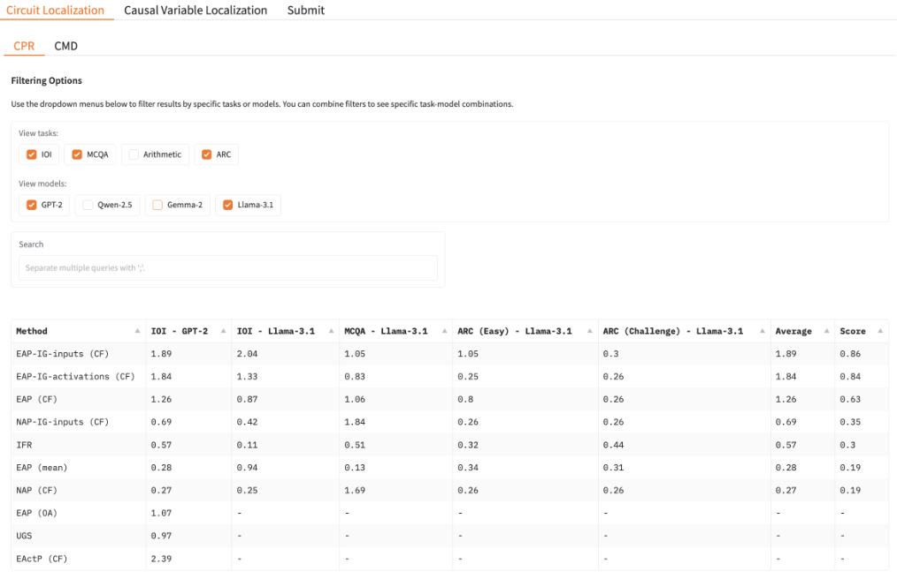
Figure 5. Leaderboard for the circuit localization track.
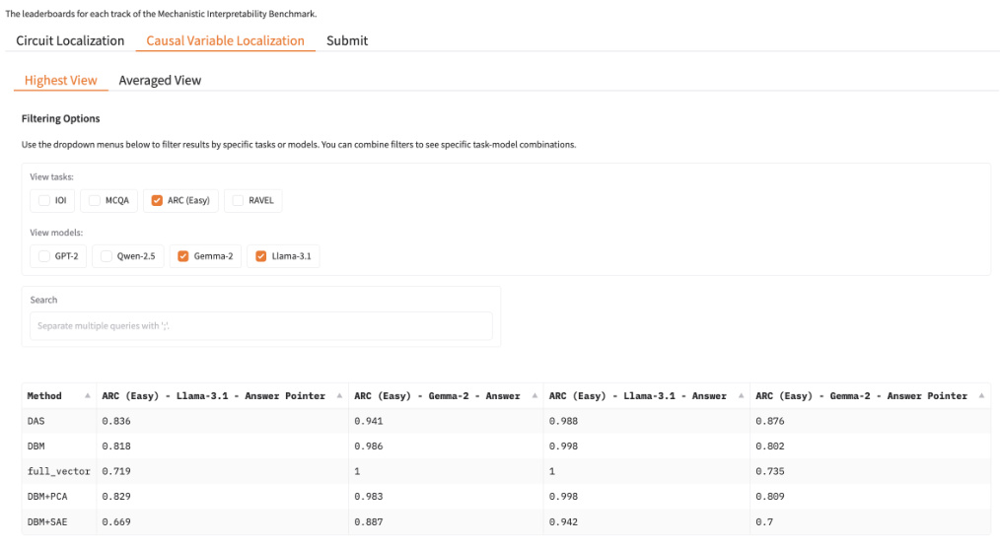
Figure 6. Leaderboard for the causal variable localization track.
Table 11. Model performance for all models on the public test split of each analyzed task (0-shot) with ranked-choice accuracy.
| A | RC | |||
|---|---|---|---|---|
| IOI | MCQA | (E) | (C) | |
| Llama-3.1 8B | 1.00 | 0.92 | 0.93 | 0.79 |
| Gemma-2 2B | 1.00 | 1.00 | 0.79 | 0.60 |
| Qwen-2.5 0.5B | 1.00 | 1.00 | 0.73 | 0.58 |
| GPT-2 Small | 1.00 | 0.30 | 0.23 | 0.23 |
Table 12. Model accuracy (0-shot, greedy generation) on MCQA counterfactuals. N = Noun, C = Color, AP = Answer Position, S = Symbol, RL = Random Letter
| Model | N | C | N+C | AP | S | RL | AP+RL | AP + S | AP + C |
|---|---|---|---|---|---|---|---|---|---|
| Llama 3.1-8B | 0.70 | 0.72 | 0.96 | 0.94 | 0.94 | 0.90 | 0.98 | 0.98 | 0.72 |
| Gemma 2-2B | 0.92 | 1.00 | 1.00 | 1.00 | 0.98 | 0.70 | 0.74 | 1.00 | 0.98 |
| Qwen 2.5-0.5B | 1.00 | 1.00 | 1.00 | 1.00 | 1.00 | 0.52 | 0.60 | 1.00 | 0.98 |
| GPT2-Small | 0.00 | 0.06 | 0.00 | 0.02 | 0.00 | 0.00 | 0.00 | 0.00 | 0.02 |
displays a Score column, which is an average of the sigmoid of each score; we apply a sigmoid because each faithfulness value exists in a separate scale, where the lower and upper bounds may be different. Thus, to prevent any one column from dominating the score, we normalize each score to a [0, 1] range by applying a sigmoid to each CPR or CMD value before averaging. Users may filter rows based on model name and/or task name. After filtering, the Average and Score columns are recomputed dynamically. This allows users to compare performance at varying levels of granularity, or in cases where some methods are only tractable to run for a subset of the task/model combinations.
The causal variable localization track’s leaderboard can be viewed in Figure 6. It displays results aggregated across all layers and token positions, and across counterfactual types. As in the circuit localization track, the Average is recomputed dynamically after filtering.
Our leaderboard will accept user submissions. To submit to the circuit localization track, a user must supply either (i) importance scores ∈ R on each node or edge, or (ii) 9 circuits of different sizes with membership in C given as Booleans. Recall from §3 that we use circuits containing varying percentages of edges; we will enforce this as a submission requirement for the circuit localization track. The smallest circuit can contain k edges in the model, where|Ck| |N |_≤0._001. The second-smallest can contain any proportion of edges k ≤ 0 . 2; the largest can contain k ≤ 0 . 5, and so on.
For the causal variable localization track, a user must provide an invertible featurizer function F and token position functions specifying where in an input to apply them. These must be provided as Python scripts. The trained featurizer, inverse featurizer, and token indices must also be provided for each task/model combination. We will evaluate whether interchange interventions on the features and the variable result in the same behavior for each counterfactual dataset and average the results across them.
D. Details on Circuit Localization Track
D.1. Methods
Mapping from scores to circuits. All of the techniques that we benchmark produce a set of scores, which must then be mapped to circuits. To find a circuit with n edges, we can simply take the top- n edges by score—what we call the top-n method for constructing circuits. However, this approach can often result in a circuit without an end-to-end pathway from inputs to outputs. Alternatively, we can perform a greedy search starting from the logits as follows. Let our circuit C = ( VC, VE ) = ( { logits }, ∅ ). Then for i = 1 , . . . , n add the highest-IEˆ edge connected to VC that is not currently in VE , to VE ; add its parent to VC . For simplicity, we use top- n , except in cases where it tends to not work well; in practice, greedy circuit construction is only needed for good performance when using information flow routes.
When deciding which components to use, we can either add to the circuit the edges with the highest score. Or, we can first
Table 13. Model accuracy (0-shot, greedy generation) on ARC counterfactuals. AP = Answer Position, S = Symbol, RL = Random Letter.
| Easy/Challenge | Model | AP | S | RL | AP+RL |
|---|---|---|---|---|---|
| Llama 3.1-8B | 0.93 | 0.91 | 0.86 | 0.85 | |
| Eas | Gemma 2-2B | 0.78 | 0.78 | 0.57 | 0.55 |
| y | Qwen 2.5-0.5B | 0.73 | 0.66 | 0.26 | 0.22 |
| GPT2-Small | 0.03 | 0.00 | 0.00 | 0.01 | |
| Llama 3.1-8B | 0.79 | 0.77 | 0.69 | 0.67 | |
| Challene | Gemma 2-2B | 0.60 | 0.62 | 0.43 | 0.41 |
| g | Qwen 2.5-0.5B | 0.56 | 0.51 | 0.18 | 0.19 |
| GPT2-Small | 0.04 | 0.00 | 0.01 | 0.00 |
take the absolute value of each score, adding the highest- magnitude scores. Adding the highest-scoring components is more likely to yield components that perform the task well, and is better suited to the CPR metric. Adding the highest-magnitude components is more likely to yield components that have any strong effect on task performance, and is better suited to the CMD metric. Thus, when we report scores, we use high-value scoring to construct circuits for CPR, and high-magnitude scoring to construct circuits for CMD.
D.2. Baselines
Attribution patching. Edge attribution patching is computed as follows. Let ( u, v ) be an edge from component u to v , au and a′ ube the output activations of_u_on normal and counterfactual inputs,_av_be the input activations ofv, and_m_be our model performance metric. EAP estimates the indirect effect as
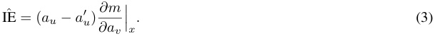
That is, we multiply the change in activation of u by the gradient (slope) of the metric m with respect to v ’s input, on normal inputs x .
When performing NAP (at the node level rather than edge level), the IEˆ of a node can be computed as in Eq. 3, but replacing ∂a∂mvwith ∂a∂m u.Note that we always run NAP at the_neuron_granularity, and not the submodule granularity; this is because at smaller circuit sizes, including just one submodule puts us over the size threshold, meaning we have multiple points at which the circuit is empty.
Attribution patching with integrated gradients. Edge attribution patching with IG (EAP-IG) is defined as follows:
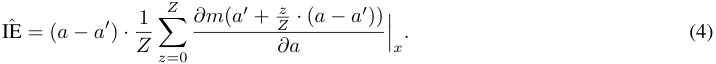
That is, given input x , we compute ∂a_∂d_at_Z_intermediate points between_a_anda′.At each intermediate point, we intervene on a , replacing its activation with what it would have been at the intermediate point. Using this new activation, we recompute m , and backpropagate from that to obtain a new gradient value. We take the mean over these gradient values to obtain a more accurate estimate of the slope of m w.r.t. a . This slope is then multiplied by the change in a as before. EAP-IG-inputs operates under a similar intuition. The key difference is that, instead of interpolating between intermediate activations at the target neuron, we only interpolate between intermediate activations at the input embeddings, and allow the network to compute the activations for the target component naturally given each intermediate input embedding. EAP-IGactivations therefore requires us to perform this interpolation for each layer separately; EAP-IG-inputs only requires us to perform this interpolation once at the inputs.
IFR. We adapt IFR to output importance scores for our computational graph as follows. Let av be the input to v ; if U is the set of nodes with edges to v , and au is the output of a node u ∈ U , then the importance of a given u to v is
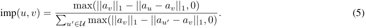
Table 14. CPR scores across circuit localization methods and ablation types. All evaluations were performed using counterfactual ablations. Higher scores are better. Arithmetic scores are averaged across addition and subtraction; see Table 17 for separate scores. We bold and underline the best and second-best methods per column, respectively.
| IOI | Arithmetic | MCQA | AR | C (E) | ARC (C) | ||||||
|---|---|---|---|---|---|---|---|---|---|---|---|
| Method | GPT-2 | Qwen-2.5 | Gemma-2 | Llama-3.1 | Llama-3.1 | Qwen-2.5 | Gemma-2 | Llama-3.1 | Gemma-2 | Llama-3.1 | Llama-3.1 |
| Random | 0.25 | 0.28 | 0.30 | 0.25 | 0.25 | 0.27 | 0.32 | 0.26 | 0.32 | 0.26 | 0.25 |
| EActP (CF) | 2.30 | 1.21 | - | - | - | 0.85 | - | - | - | - | - |
| EAP (mean) | 0.29 | 0.71 | 0.68 | 0.98 | 0.35 | 0.29 | 0.33 | 0.13 | 0.26 | 0.34 | 0.80 |
| EAP (CF) | 1.20 | 0.26 | 1.29 | 0.85 | 0.55 | 0.85 | 1.49 | 1.00 | 1.08 | 0.80 | 0.82 |
| EAP (OA) | 0.95 | 0.70 | - | - | - | 0.29 | - | - | - | - | - |
| EAP-IG-inputs (CF) | 1.85 | 1.63 | 3.20 | 2.08 | 0.99 | 1.16 | 1.64 | 1.05 | 1.53 | 1.04 | 0.98 |
| EAP-IG-activations (CF) | 1.82 | 1.63 | 2.07 | 1.60 | 0.98 | 0.77 | 1.57 | 0.79 | 1.70 | 0.71 | 0.63 |
| NAP (CF) | 0.28 | 0.30 | 0.30 | 0.26 | 0.27 | 0.38 | 1.47 | 1.69 | 1.01 | 0.26 | 0.26 |
| NAP-IG (CF) | 0.76 | 0.29 | 1.52 | 0.42 | 0.39 | 0.77 | 1.71 | 1.87 | 1.53 | 0.26 | 0.26 |
| IFR | 0.58 | 0.31 | 0.25 | 0.09 | 0.89 | 0.40 | 0.38 | 0.52 | 0.34 | 0.36 | 0.24 |
| UGS | 0.97 | 0.98 | - | - | - | 1.17 | - | - | - | - | - |
Because important scores are normalized (for any given node, the sum of the scores of edges to it will be 1), we cannot apply a top- n procedure to find IFR circuits; we must use greedy search.
Uniform Gradient Sampling. UGS maintains a parameter θ˜ ( u,v ) for each edge ( u, v ), where θ ( u,v ) = (1 + exp( −θ˜ ( u,v )))−1 represents the estimated probability of ( u, v ) being part of the circuit determined by the pruning mask. The sampling frequency for α ( u,v ) is determined by w ( θ ( u,v )) = θ ( u,v )(1 − θ ( u,v )). Specifically, α ( u,v ) ∼ Unif(0 , 1) with probability w ( θ ( u,v )), α ( u,v ) = 1 with probability θ ( u,v ) −1 2w(θ(u,v)), andα(u,v)= 0 with probability 1−θ(u,v)−1 2w(θ(u,v)). We use θ ( u,v ) as the importance scores when constructing circuits.
The loss function comprises two components: (1) a performance metric that measures the discrepancy between the original model’s predictions and the output of the partially ablated model (here, KL divergence); and (2) a regularization term that controls the sparsity of the subgraph determined by the pruning mask. The balance between these components is governed by a hyperparameter λ . For our experiments, we set λ = 10_−3 , chosen through a hyperparameter search over { 10−2 , 10−3 , . . . , 10−_7 } using a validation set. All other hyperparameters were left at their default values, as specified in Li & Janson (2024).
Optimal ablations. In optimal ablations (Li & Janson, 2024), rather than taking an activation from an example-dependent counterfactual input, we learn an ablation vector a that is not dependent on the original input. Given submodule u taking activations u , we initialize the ablation vector to the mean of u over the task dataset D . Then, we optimize a via gradient descent to minimize
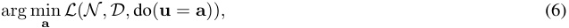
where L is the cross-entropy (language modeling) loss on the task dataset D when we set u to a . We pre-compute this vector for all u in N , and then use these vectors as the counterfactual activations during circuit discovery.
We use initial learning rate 1 × 10_−_3 and batch size 20. We train for up to 1000 steps on the train split of the task dataset. We compute loss on the validation split every 50 steps; if the validation loss does not improve from its best value after 150 steps, we stop early and save the ablation vector from the best evaluation step.
D.3. Further Circuit Localization Results
Table 14 presents CPR scores for all valid task-model combinations. Trends are largely similar to those from the CMD table, except that EAP and UGS are less competitive with EAP-IG-inputs.
We provide scores for all methods where possible. UGS has significant memory requirements; running it on an 80G GPU is not possible for larger models, even when reducing the batch size to 1. Edge activation patching (EActP) and optimal ablations–based methods do not scale well time-wise with model size; the number of edges multiplies significantly, meaning
Table 15. CMD scores for the private test set across circuit localization methods and ablation types (lower is better). All evaluations were performed using counterfactual ablations. Arithmetic scores are averaged across addition and subtraction. We bold and underline the best and second-best methods per column, respectively.
| IO | I | Arithmetic | MCQA | ARC ( | E) | ARC (C) | |||||
|---|---|---|---|---|---|---|---|---|---|---|---|
| Method | GPT-2 Q | wen-2.5 G | emma-2 L | lama-3.1 | Llama-3.1 | Qwen-2.5 | Gemma-2 Ll | ama-3.1 | Gemma-2 L | lama-3.1 | Llama-3.1 |
| Random | 0.75 | 0.72 | 0.70 | 0.75 | 0.75 | 0.73 | 0.68 | 0.74 | 0.68 | 0.73 | 0.75 |
| EActP (CF) | 0.01 | 0.48 | - | - | - | 0.35 | - | - | - | - | - |
| EAP (mean) | 0.27 | 0.24 | 0.28 | 0.04 | 0.07 | 0.21 | 0.19 | 0.17 | 0.22 | 0.19 | 0.20 |
| EAP (CF) | 0.03 | 0.15 | 0.06 | 0.01 | 0.01 | 0.12 | 0.08 | 0.12 | 0.04 | 0.20 | 0.19 |
| EAP (OA) | 0.31 | 0.17 | - | - | - | 0.11 | - | - | - | - | - |
| EAP-IG-inp. (CF) | 0.03 | 0.02 | 0.04 | 0.01 | 0.01 | 0.08 | 0.06 | 0.14 | 0.04 | 0.10 | 0.22 |
| EAP-IG-act. (CF) | 0.02 | 0.01 | 0.03 | 0.01 | 0.00 | 0.05 | 0.07 | 0.12 | 0.04 | 0.30 | 0.38 |
| NAP (CF) | 0.36 | 0.33 | 0.40 | 0.30 | 0.28 | 0.24 | 0.29 | 0.36 | 0.33 | 0.69 | 0.69 |
| NAP-IG (CF) | 0.25 | 0.19 | 0.29 | 0.18 | 0.17 | 0.18 | 0.29 | 0.33 | 0.27 | 0.67 | 0.67 |
| IFR | 0.43 | 0.70 | 0.75 | 0.89 | 0.22 | 0.60 | 0.62 | 0.49 | 0.66 | 0.63 | 0.53 |
| UGS | 0.04 | 0.02 | - | - | - | - | 0.19 | - | - | - | - |
Table 16. CPR scores for the private test set across circuit localization methods and ablation types. All evaluations were performed using counterfactual ablations. Higher scores are better. Arithmetic scores are averaged across addition and subtraction. We bold and underline the best and second-best methods per column, respectively.
| IOI | Arithmetic | MCQA | AR | C (E) | ARC (C) | ||||||
|---|---|---|---|---|---|---|---|---|---|---|---|
| Method | GPT-2 | Qwen-2.5 | Gemma-2 | Llama-3.1 | Llama-3.1 | Qwen-2.5 | Gemma-2 | Llama-3.1 | Gemma-2 | Llama-3.1 | Llama-3.1 |
| Random | 0.25 | 0.28 | 0.30 | 0.25 | 0.25 | 0.27 | 0.32 | 0.26 | 0.32 | 0.26 | 0.25 |
| EActP (CF) | 2.39 | 1.20 | - | - | - | 0.87 | - | - | - | - | - |
| EAP (mean) | 0.28 | 0.34 | 0.64 | 0.94 | 0.34 | 0.29 | 0.34 | 0.13 | 0.26 | 0.34 | 0.31 |
| EAP (CF) | 1.26 | 0.27 | 1.31 | 0.87 | 0.54 | 0.84 | 1.48 | 1.06 | 1.08 | 0.80 | 0.26 |
| EAP (OA) | 1.07 | 0.75 | - | - | - | 0.29 | - | - | - | - | - |
| EAP-IG-inputs (CF) | 1.89 | 1.73 | 3.03 | 2.04 | 0.98 | 1.61 | 1.05 | 0.95 | 1.53 | 1.05 | 0.31 |
| EAP-IG-activations (CF) | 1.84 | 1.61 | 2.34 | 1.33 | 0.98 | 0.76 | 1.53 | 0.83 | 1.71 | 0.27 | 0.28 |
| NAP (CF) | 0.27 | 0.30 | 0.29 | 0.25 | 0.26 | 0.38 | 1.46 | 1.69 | 1.02 | 0.26 | 0.26 |
| NAP-IG (CF) | 0.69 | 0.29 | 1.42 | 0.42 | 0.38 | 0.77 | 1.68 | 1.84 | 1.54 | 0.26 | 0.26 |
| IFR | 0.57 | 0.30 | 0.25 | 0.11 | 0.89 | 0.40 | 0.38 | 0.51 | 0.34 | 0.37 | 0.47 |
| UGS | 0.97 | 1.00 | - | - | - | 1.17 | - | - | - | - | - |
that we must iterate over many more components. We do not include methods that take over 1 week to run.12
In Table 17 we provide scores for each arithmetic operator separately.
E. Details on InterpBench Model Training
Faithfulness is a fuzzy and unbound metric. Ideally, we would like to know which edges or nodes are in the circuit in advance, such that we can compute more precise metrics such as precision and recall. Inspired by InterpBench (Gupta et al., 2024), we train a transformer model closely following their methods. The model we use was explicitly trained to predict the indirect objects in the IOI dataset (App. C.1), and implements a simplified version of the IOI circuit described by Gupta et al. (2024).
The model has 6 layers and 4 heads per layer, d model = 64, and d head = 16. It was trained with mini-batches of varying lengths using left padding. We performed hyperparameter sweeps to find the best weights for the SIIT algorithm. We use the three-losses variant of SIIT; see Gupta et al. (2024) for details. The final model was trained for 70 hours on a single H100 GPU.
12This is an arbitrary threshold. We do not restrict users from submitting methods that take this long to run if they so choose.
Table 17. CPR and CMD scores for Llama-3.1 on the arithmetic public test sets, separated by operator. Scores are generally similar across operators, and methods follow similar rankings regardless of which operators are used. A notable exception is EAP-IG-activations, where CPR scores are significantly different.
| Arithm | etic (+) | Arithm | etic (−) | |
|---|---|---|---|---|
| Method | CPR(↑) | CMD(↓) | CPR(↑) | CMD(↓) |
| Random | 0.25 | 0.25 | 0.75 | 0.75 |
| EAP (mean) | 0.40 | 0.07 | 0.31 | 0.07 |
| EAP (CF) | 0.49 | 0.01 | 0.61 | 0.01 |
| EAP-IG-inputs | 0.96 | 0.00 | 1.03 | 0.00 |
| EAP-IG-activations | 0.98 | 0.00 | 0.99 | 0.00 |
| NAP (CF) | 0.26 | 0.29 | 0.27 | 0.27 |
| NAP-IG (CF) | 0.43 | 0.18 | 0.34 | 0.18 |
| IFR | 0.90 | 0.24 | 0.87 | 0.20 |
F. Details on Causal Variable Localization Track
F.1. Causal Abstraction Analysis
Causal Models and Interventions A deterministic causal model H has variables that take on values . Each variable has a mechanism that determines the value of the variable based on the values of parent variables . Variables without parents, denoted X , can be thought of as inputs that determine the setting of all other variables, denoted H ( x ). A hard intervention X ← x overrides the mechanisms of variable X , fixing it to a constant value x .
Interchange Interventions We perform interchange interventions (Vig et al., 2020; Geiger et al., 2020) where a variable (or set of features) X is fixed to be the value it would take on if the LM were processing counterfactual input c . We write X ← Get( H ( c ) , X ) where Get( H ( c ) , X ) is the value of variable X when H processes input c . In experiments, we will feed a base input b to a model under an interchange intervention HX← Get( H ( c ) ,X ))( b ).
Featurizing Hidden Vectors The dimensions of hidden vectors are not an ideal unit of analysis (Smolensky, 1986), and so it is typical to featurize a hidden vector using some invertible function, e.g., an orthogonal matrix, to project a hidden vector into a new variable space with more interpretable dimensions called “features”(Geiger et al., 2024a; Huang et al., 2024a). A feature intervention Π ← Π edits the mechanism of a hidden vector h to fix the value of features Π to Π.
Alignment The LM is a low-level causal model N where variables are dimensions of hidden vectors and the hypothesis about LM structure is a high-level causal model H . An alignment assigns each high-level variable X to features of a hidden vector ΠX h,e.g.,orthogonal directions in the activation space ofh.To evaluate an alignment,we perform intervention experiments to evaluate whether high-level interventions on the variables in H have the same effect as interventions on the aligned features in N .
Causal Abstraction We use interchange interventions to reveal whether the hypothesized causal model H is an abstraction of an LM N . To simplify, assume both models share an input and output space. The high-level model H is an abstraction of the low-level model N under a given alignment when each high-level interchange intervention and the aligned low-level intervention result in the same output. For a high-level intervention on X aligned with low-level features ΠX hwitha counterfactual input c and base input b , we write
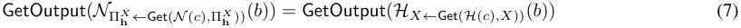
If the low-level interchange intervention on the LM produces the same output as the aligned high-level intervention on the algorithm, this is a piece of evidence in favor of the hypothesis. This extends naturally to multi-variable interventions (Geiger et al., 2024a).
Graded Faithfulness Metric We construct counterfactual datasets for each causal variable where an example consists of a base prompt and a counterfactual prompt . The counterfactual label is the expected output of the algorithm after the high-level interchange intervention, i.e., the right-side of Equation 7. The interchange intervention accuracy is the proportion of examples for which Equation 7 holds, i.e., the degree to which H faithfully abstracts N .
F.2. Aligning Unsupervised Features to Causal Variables
In our experiments, we use a variety of unsupervised methods for featurizing hidden vectors in LMs, including principal component analysis (PCA), sparse autoencoders (SAE), and simply taking standard dimensions of the hidden vector as features. For a variable X in the high-level causal model H , we learn a set of features ΠX hof a hidden vectorhof the LM N using Differential Binary Masking (DBM) (Cao et al., 2020; 2022; Csordas et al.´ , 2021; Davies et al., 2023). Given base input b and counterfactual input c , we train a mask m ∈ [0 , 1]|Πh| on the objective
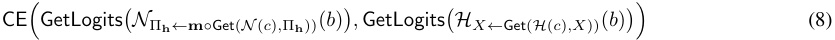
Principal Component Analysis. Principal Component Analysis (PCA) serves as an unsupervised dimensionality reduction technique (Tigges et al., 2023; Marks & Tegmark, 2024). For a vector set ( V ⊂ Rn ) where ( |V| > n ), PCA determines orthogonal unit vectors � p 1 . . . p n �. We employ the principal components’ orthogonal matrix as featurizer F , mapping neurons into a more interpretable lower-dimensional space. Given PCA’s unsupervised nature, which doesn’t inherently specify component information, we use differential binary masking to select principal components that best abstracted by a causal variable.
Sparse Autoencoders. Sparse Autoencoders (SAE) employ an autoencoder architecture to transform neural activations into a sparse, higher-dimensional feature space before reconstruction (Bricken et al., 2023; Huben et al., 2024). Our implementation utilizes the GemmaScope (Lieberum et al., 2024) and LlamaScope (He et al., 2024) SAE collections. A key consideration is that featurizer invertibility requires inclusion of the SAE reconstruction loss. Consequently, all SAE feature interventions incorporate the base input’s reconstruction error. As with PCA, sparse autoencoders produce unsupervised features without inherent interpretability. We address this by implementing the previously described differential binary masking approach on SAE features (Chaudhary & Geiger, 2024).
F.3. Distributed Alignment Search
Distributed Alignment Search. Distributed Alignment Search (DAS) (Geiger et al., 2024b) operates as a supervised featurization technique that identifies a linear subspace within the model’s representation space. The method utilizes an orthogonal matrix Q of size n × n , written as Q = [ u 1 . . . u n ]. This transformation matrix converts the original representation into a new coordinate system through F ( h ) = Q⊤ h . The feature subset Π h is extracted from the first k dimensions of this transformed space, where k serves as an adjustable hyperparameter. The optimization of matrix Q minimizes the following loss:
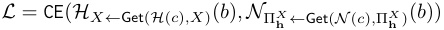
To manage computational efficiency, rather than computing the complete matrix Q , we learn only the k orthogonal vectors that constitute feature ΠX h.Our implementation utilizes the pyvene library (Wu et al., 2024), training the featurizer on base-counterfactual pairs with interchange interventions.
F.4. Hyperparameters
Learning rate and regularization The learning rate used across models and tasks was 0 . 01, except for IOI which we used learning rate of 1 . 0. No regularization loss terms were used.
Epochs and batch size. For RAVEL, we train for one epoch of ≈ 30k examples with a batch size of 128 for Llama and 32 for Gemma. For MCQA, we train for 8 epochs on ≈ 300 examples with a batch size of 64. For ARC (easy), we train for 2 epochs of ≈ 9k examples and a batch size of 48 with Gemma and for 1 epoch with a batch size of 16 for Llama. For the two-digit addition task, we train for 1 epoch on ≈ 30k examples with a batch size of 256. For IOI, we train for one epoch on ≈ 30k examples.
DAS dimensionality. The dimensionality of DAS was set at 16 for the ordering ID X Order and carry-the-one variable X Carry. The DAS dimensionality for S Tok and S Pos are 32. The O Answer variable in MCQA and ARC (Easy) has a DAS dimensionality of half the residual stream for their respective model, because token embeddings live in a higher dimensional space. The RAVEL task which had the dimensionality of an eighth of the residual stream, according to the experiments from (Huang et al., 2024a).
Masking parameters. For the masking methods, the temperature schedule used begins at 1 . 0 and approaches 0 . 01.
F.5. High-level Causal Models and Experimental Details for Each Task
F.5.1. MULTIPLE-CHOICE QUESTION ANSWERING
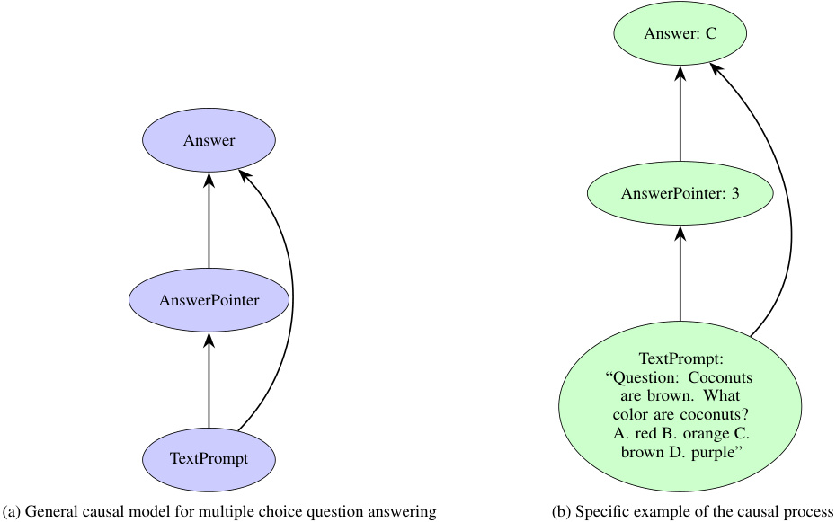
Answer: C
Answer
AnswerPointer: 3
AnswerPointer
TextPrompt:
“Question: Coconuts
are brown. What
color are coconuts?
A. red B. orange C.
brown D. purple”
TextPrompt
(a) General causal model for multiple choice question answering (b) Specific example of the causal process
Figure 7. Causal model for multiple choice question answering. The model operates through a two-step mechanism: first, the TextPrompt is processed to generate an AnswerPointer that identifies the position of the correct answer in the options list. Second, this AnswerPointer is used to extract the corresponding letter label (A, B, C, or D) as the final Answer. This mechanism separates the reasoning process (identifying which option is correct) from the answer extraction (converting position to label).
We define the causal model for multiple-choice question answering, including one for the ARC dataset, in Figure 7. It comprises two variables, as illustrated in Figure 7a: 1) X Order: It takes the text prompt as input and outputs a pointer that encodes the position of the correct label. 2) O Answer: It receives the answer pointer as input and dereferences it by retrieving
the corresponding token value from the text prompt. For instance, consider the text prompt shown in Figure 7b. First, the X Order variable identifies the position of the correct option—position 3. Then, the O Answer variable uses this information to locate and extract the value of the third option from the prompt—i.e., C —which becomes the final output. Similar high-level causal models have also been proposed in prior work (Lieberum et al., 2023b; Prakash et al., 2024).
We highlight two interchange intervention experiments—one for each variable in the causal model—to align the LM’s internal representations with those of the causal model. For both variables, we use counterfactuals in which the position of the correct option and the option label is replaced with a different letter. (To be clear, in the main text, we report the average across this counterfactual and counterfactuals that only change position and only change the option label.)
Figures 8a and 8b show the alignment results of the X Order variable in the Gemma model using full vector patching and the DAS method, respectively. This result shows that we can use DAS isolate the answer position in the middle layers above the correct label token and then the final token. This behavior aligns with our hypothesized causal model, in which the model first identifies the position of the correct option, before dereferencing it to fetch token value information.
Figures 8c and 8d illustrate the alignment results of the O Answer variable in the Gemma model, using the full vector patching and DAS methods, respectively. The success of full vector patching at the last layer of the last token is logically guaranteed, as this is where the model predicts the next token. However, full vector patching fails at other locations because the output token is tangled with ordering information and the positional encoding. On the other hand, DAS is able to disentangle the output token from this other information at basically every layer.
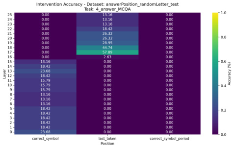
(a) X Order variable alignment results with full residual vector patching.
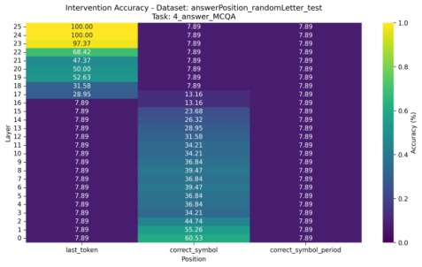
(c) O Answer variable alignment results with full vector patching.
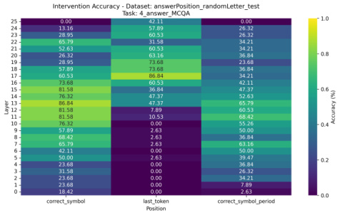
(b) X Order variable alignment results using the subspace identified using the DAS method.
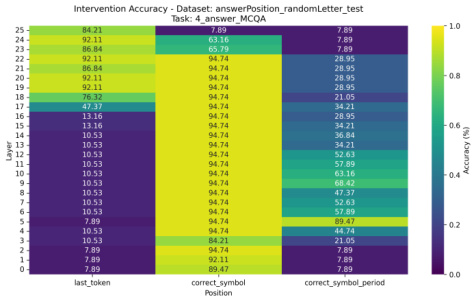
(d) O Answer variable alignment results using the subspace identified using the DAS method.
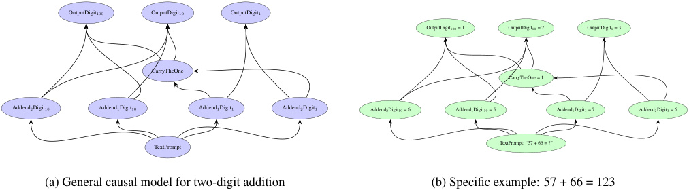
OutputDigit100 OutputDigit10 OutputDigit1
OutputDigit100 = 1 OutputDigit10 = 2 OutputDigit1 = 3
CarryTheOne
CarryTheOne = 1
Addend2Digit10 Addend1Digit10 Addend1Digit1 Addend2Digit1 Addend2Digit10 = 6 Addend1Digit10 = 5 Addend1Digit1 = 7 Addend2Digit1 = 6
TextPrompt TextPrompt: “57 + 66 = ?”
(a) General causal model for two-digit addition (b) Specific example: 57 + 66 = 123
Figure 9. Causal model for two-digit addition arithmetic. The model processes addition through a series of interdependent mechanisms: (1) The 1’s digits from both addends directly influence the output 1’s digit through modular addition. (2) When the sum of 1’s digits exceeds 9, the CarryTheOne variable becomes 1, otherwise it’s 0. (3) The 10’s digit of the result is determined by three inputs: the 10’s digits of both addends and the CarryTheOne value. (4) The 100’s digit is causally influenced by both 10’s digits of the addends and the carry operation—it becomes 1 only when the sum of 10’s digits plus any carried value exceeds 9.
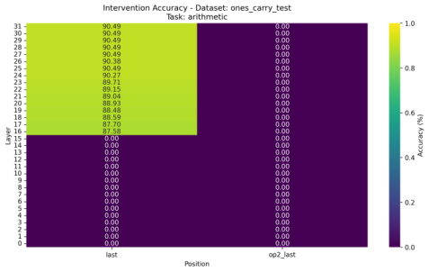
(a) X Carry variable alignment results in Llama with full vector patching and counterfactuals that differ only by the carry the one variable.
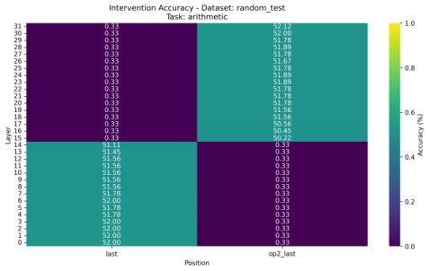
(c) X Carry variable alignment results in Llama with full vector patching and counterfactuals that are randomly sampled.
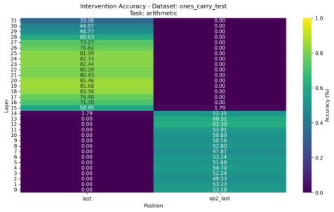
(b) X Carry variable alignment results in Llama using the DAS method and counterfactuals that differ only by the carry the one variable.
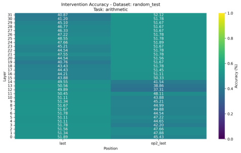
(d) X Carry variable alignment results in Llama with the DAS method and counterfactuals that are randomly sampled.
F.5.2. ARITHMETIC
We define the causal model for arithmetic (addition) in Figure 9. Unlike the causal models for MCQA and ARC, the addition causal model involves multiple variables, as illustrated in Figure 9a. First, the units and tens digits of both addends are parsed. The unit digits are then added together to determine the units digit of the result, as well as whether a carry is
generated. Next, the tens digits of both addends—along with the carry, if any—are summed to compute the tens digit of the result. This step also helps determine whether the result includes a hundred’s digit.
Consider the example shown in Figure 9b, namely 57 + 66. The causal model begins by parsing the addends to identify their respective tens and units digits. It first adds the unit digits, 7 and 6, determining that the units digit of the result is 3, and that a carry is generated. Next, it adds the tens digits of both addends along with the carry, concluding that the tens digit of the result is 3. Using these same three values—the tens digits and the carry—the model also determines that the result includes a hundreds digit, which is 1.
We evaluate the hypothesized causal model by conducting an interchange intervention experiment to align the X Carry variable. The counterfactual examples are designed such that they introduce a carry when the original does not, and remove it when the original includes one. Figures 10a and 10b present the alignment results in the Llama model using full vector patching and the DAS method, respectively. At first, these results suggest that the X Carry information emerges at the last token position during the middle layers of the model. However, this is likely a representation of the tens-digit output, which perfectly correlates with the ones-carry variable in these counterfactual. Indeed, when we use random counterfactuals in which the output is entirely independent from the carry the one value, we see a total failure.
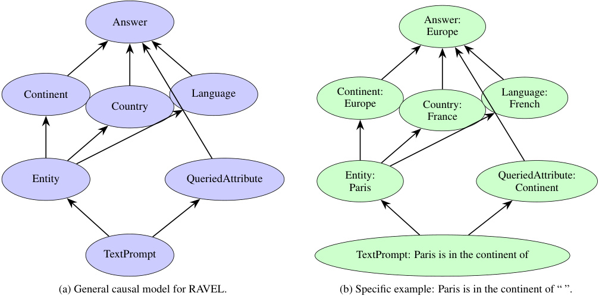
Answer Answer:
Europe
Continent Language Continent: Language:
Country Europe Country: French
France
Entity QueriedAttribute Entity: QueriedAttribute:
Paris Continent
TextPrompt TextPrompt: Paris is in the continent of
(a) General causal model for RAVEL. (b) Specific example: Paris is in the continent of “ ”.
Figure 11. Causal model for the RAVEL task. Given a prompt querying an attribute of a city entity, the model extracts the entity and queried attribute as input variables, then identifies the values of the ACont , ACountry , and ALang attributes for the entity. Lastly, it decides which value to output based on the queried attribute.
F.5.3. RAVEL
We define the causal model for the RAVEL task in Figure 11. The model takes an input prompt that queries the value of an attribute of an entity (e.g., the continent of a city) and outputs the correct answer. As illustrated in Figure 11a, the causal model first parses the input prompt T to extract two input variables: the entity and the queried attribute AQuery . The entity refers to a city, which is associated with three attribute variables: ACont , ACountry , and ALang . The model then identifies the value of each attribute variable for the given entity. Lastly, the answer variable O selects the appropriate value based on the queried attribute. For example, given the prompt “Paris is in the continent of” in Figure 11b, the model first identifies the entity “Paris” and the queried attribute “continent.” It then uses its internal knowledge to retrieve the continent, country, and language associated with the city of Paris. Lastly, since the queried attribute is “continent,” the model outputs “Europe.”
The Llama model achieves 66.5% accuracy on the task and the Gemma model achieves 70.5% accuracy on the task. The dataset contains many cities, so considering that there are many countries and languages to choose from, this is good performance. We filter out failure cases.
We conduct interchange intervention experiments on each of the attribute variables, ACont , ACountry , and ALang , to align the language model’s internal representations with the hypothesized causal model. We use two types of counterfactuals: the attribute counterfactual , which alters the queried attribute in the base prompt, and the Wikipedia counterfactual , which is a freeform sentence from Wikipedia about the entity city. If the MI method successfully isolates the target attribute, then the intervention should cause the language model to output the corresponding attribute value for the entity city in the counterfactual.
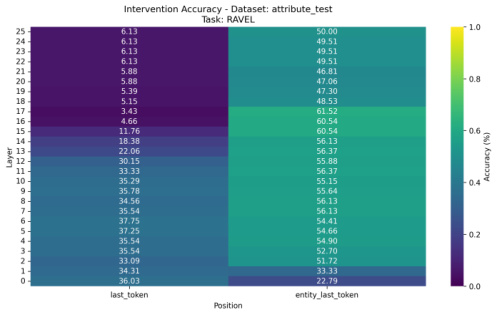
(a) IIA using the identity featurizer (Full Vector).
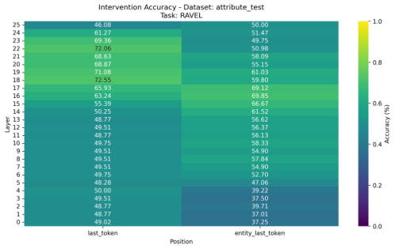
(b) IIA using Distributed Alignment Search to learn a featurizer.
Figure 12. Interchange Intervention Accuracy (IIA) at each layer of Gemma-2 2B, when targeting the ACountry variable using the attribute counterfactual . The Full Vector baseline fails to isolate the target variable, whereas DAS achieves high accuracy in the mid layers.
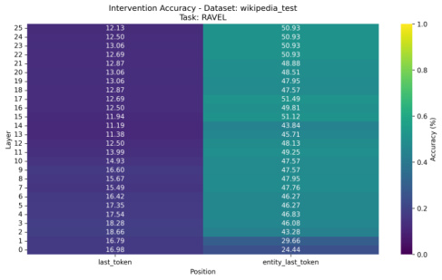
(a) IIA using the identity featurizer (Full Vector).
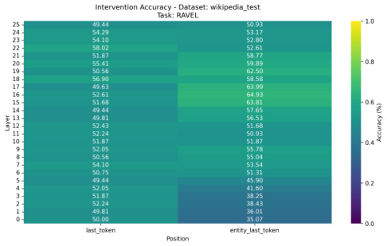
(b) IIA using Distributed Alignment Search to learn a featurizer.
Figure 13. Interchange Intervention Accuracy (IIA) at each layer of Gemma-2 2B when targeting the ACountry variable using the Wikipedia counterfactual . This counterfactual presents a more challenging setting. The Full Vector baseline fails to disentangle the attributes, while DAS identifies meaningful signal in the mid layers.
Results. We present representative results from the set of intervention experiments. Specifically, we focus on the Gemma-2 2B model and target the ACountry variable. Figure 12 shows the Interchange Intervention Accuracy (IIA) at each layer using the attribute counterfactual , comparing the baseline (Full Vector) and the best-performing method (DAS). Half of this counterfactual dataset consists of prompts querying the ACountry variable, while the other half queries the ACont or ALang variables. Successfully isolating the ACountry variable requires the method to change only the value of ACountry while preserving the values of ACont and ALang . Since the Full Vector swaps out all features, it performs poorly in the last token position in the later layers. In contrast, the featurizer learned by DAS achieves high IIA in layers 18 and 19.
We also evaluate performance using the Wikipedia counterfactual , which presents a more challenging case: the counterfactual prompt is a freeform sentence that does not query an attribute, and thus would reduce false positives where the counterfactual
answer coincides with the base prompt. In Figure 13, we observe similar but generally lower IIA patterns compared to the attribute counterfactual . The Full Vector baseline fails to isolate the variable, with IIA in both token positions consistently around or below 50. For DAS, IIA increases from the early to mid layers, with meaningful signals emerging in the entity’s last token position in the mid layers. It is worth noting that the ACountry variable may be more difficult to disentangle than others (Huang et al., 2024a), and all five methods we evaluate exhibit lower IIA on ACountry compared to the other two variables.
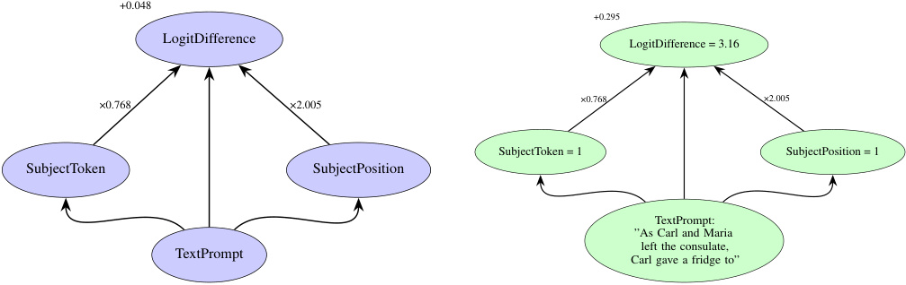
+0.048
+0.295
LogitDifference LogitDifference = 3.16
×0.768 ×2.005 ×0.768 ×2.005
SubjectToken = 1 SubjectPosition = 1
SubjectToken SubjectPosition
TextPrompt:
”As Carl and Maria
left the consulate,
TextPrompt Carl gave a fridge to”
(a) General causal model for indirect object identification
(b) Specific example showing prediction for ”Carl”
Figure 14. Causal model for indirect object identification. The TextPrompt is processed to extract the subject token S Tok and the subject position S Pos. The output variable mechanism (1) compares the token and position to the input, and determines whether the token and position were inverted or the same and sets PositionSignal and TokenSignal to 1 and -1 accordingly and (2) computes 0 . 048 + 0 . 768TokenSignal + 2 . 005PositionSignal, with position having a stronger influence than token identity.
F.5.4. INDIRECT OBJECT INDENTIFICATION
The indirect object identification (IOI) task is a natural language task which consists of sentences like “When Mary and John went to the store, John gave a drink to”, and evaluates for the model completion, ‘Mary’. The task is linguistically fundamental and has an interpretable algorithm: given two names in a sentence, predict the name that isn’t the subject of the last clause.
A sentence in IOI has two parts: a beginning clause that depends on the rest of the sentence, like “When Mary and John went to the store,” and a main clause, like “John gave a bottle of milk to Mary.” The beginning clause introduces the indirect object (IO), ‘Mary’, and the subject (S), ‘John’. The main clause mentions the subject again, and in every IOI example, the subject gives something to the IO. The goal of the IOI task is to predict the last word of the sentence, which should be the IO. Our high-level model predicts the logit difference resulting from subtracting indirect object name logit from the the subject name logit. When this difference is positive, the model is more likely to predict the subject than the indirect object.
(Wang et al., 2023) identify that heads 3 and 9 in layer 7 (7.3 and 7.9) and heads 6 and 10 in layer 8 (8.6 and 8.10) all reduce the likelihood of the model outputting the subject, dubbing these heads “S-inhibition heads”. These heads help the model output the indirect object to solve the task. Specifically, Wang et al. (2023) found that S-Inhibition Heads use two types of signals. The first is the token signal, which carries the token identity of the subject, while the second is the position signal, which carries information about the position of subject, i.e., first or second. These information signals carried by the S-Inhibition heads inform other components in the model to avoid the token and position of the subject.
To identify these two signals, Wang et al. (2023) perform interchange interchange interventions that manipulate each signal separately. The IO ↔ S1-Flip counterfactual inverts the position of the subject while keeping the token the same. The IO ↔ S2-Flip inverts the token of the subject while keeping the position the same. The IO ↔ S1-Flip+IO ↔ S2-Flip inverts the position and token of the subject.
After an interchange intervention is performed on all four heads with one of these counterfactuals, Wang et al. (2023) consider the token/position to have value 1 if unchanged and value -1 if inverted.13 Using these binary signals as inputs and the logit
13They also included a value of 0 for the token signal of a random new token, but we leave out this condition for our experiments.
Table 18. Mean Squared Error (MSE) for aligning S Pos and S Tok to each subset of heads.
| Heads | MSE (SPos) | MSE (STok) |
|---|---|---|
| ((7, 3), (7, 9), (8, 6)) | 2.45 | 6.83 |
| ((7, 3), (7, 9), (8, 10)) | 3.08 | 6.79 |
| ((7, 3), (7, 9)) | 5.42 | 3.28 |
| ((7, 3), (8, 6), (8, 10)) | 2.52 | 8.08 |
| ((7, 3), (8, 6)) | 4.17 | 4.82 |
| ((7, 3), (8, 10)) | 4.92 | 3.51 |
| ((7, 3)) | 12.03 | 4.07 |
| ((7, 9), (8, 6), (8, 10)) | 2.90 | 10.20 |
| ((7, 9), (8, 6)) | 3.15 | 5.05 |
| ((7, 9), (8, 10)) | 3.63 | 4.33 |
| ((7, 9)) | 7.90 | 2.80 |
| ((8, 6), (8, 10)) | 3.00 | 5.71 |
| ((8, 6)) | 5.81 | 4.21 |
| ((8, 10)) | 7.28 | 2.82 |
difference between indirect object and subject as outputs, they perform a regression and find that 2 . 31PositionSignal + 0 . 99TokenSignal is the best predictive model of logit difference. On our dataset, we perform the same intervention experiments and fit a linear model, finding that 0 . 048 + 2 . 005PositionSignal + 0 . 768TokenSignal is the best predictor of logit difference.
Wang et al. (2023) never conducted experiments attempting to disentangle the position and token signals, and this is what we do here.
Dataset. Our dataset consists of train, validation, and test splits. The train, test, and private test sets contain 10000 examples each, as well as 10000 examples for 8 corresponding counterfactuals as shown in Table 6.
Causal Model. We define the causal model for indirect object identification in Figures 14. The variables S Tok and S Pos are derived from the original prompt and without intervention, they will always take on the value of the subject token identity and subject position, respectively. These variables are not equivalent to the binary signals TokenSignal and PositionSignal. Instead, the output O LogDiff variable compares the subject token and subject position to the original input to determine whether the token and position is inverted and run the linear model accordingly.
Without an intervention, the S Tok and S Pos variables will always match the text input, and the logit diff is predicted to be 0 . 048 + 2 . 005 + 0 . 768. When only S Tok is intervened on, the logit diff is predicted to be 0 . 048 + 2 . 005 − 0 . 768. When only S Pos is intervened on, the logit diff is predicted to be 0 . 048 − 2 . 005 + 0 . 768. If both are intervened on, then the logit diff is predicted to be 0 . 048 − 2 . 005 − 0 . 768
Full Vector Brute-Force Search We conduct a brute-force search by aligning each of the two causal variables with every possible subset of the four S-inhibition heads. In Table 18 we report the mean-squared error for the alignments. In the main text, we report the alignment of S Pos to heads 7.3, 7.9, and 8.6 and S Tok to the head 8.10.